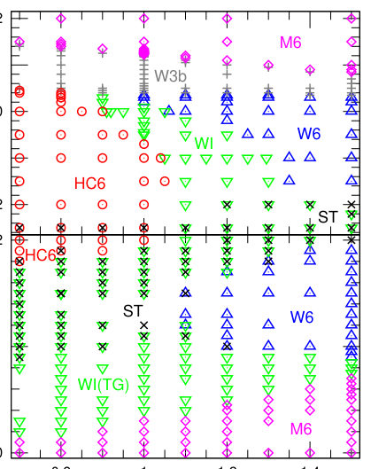
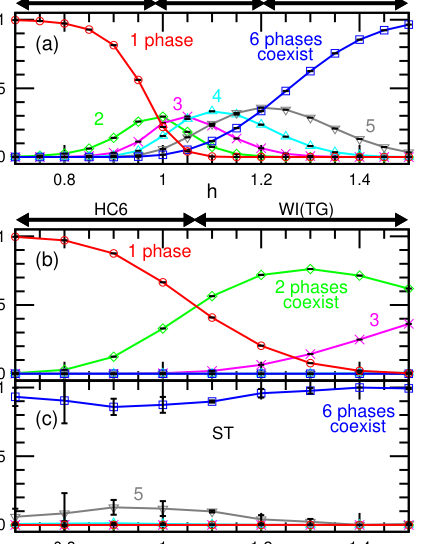
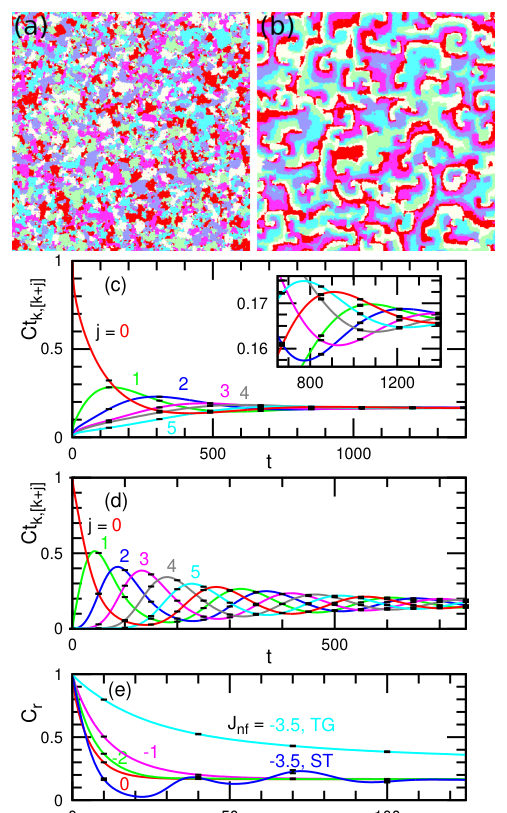
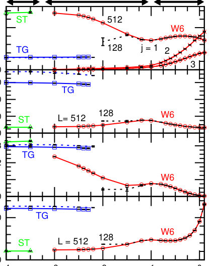

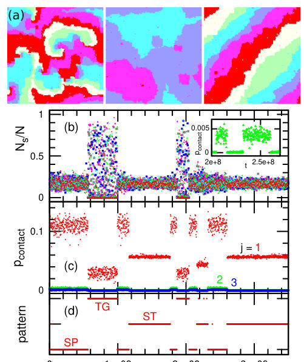
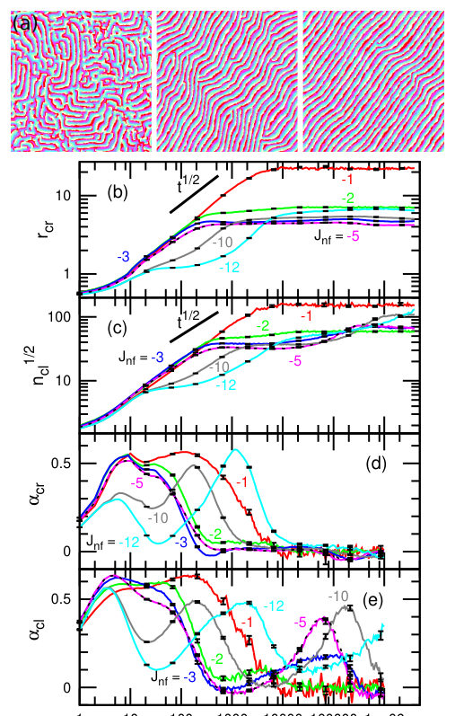
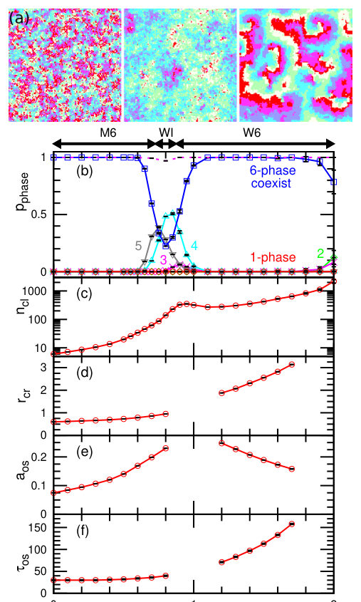
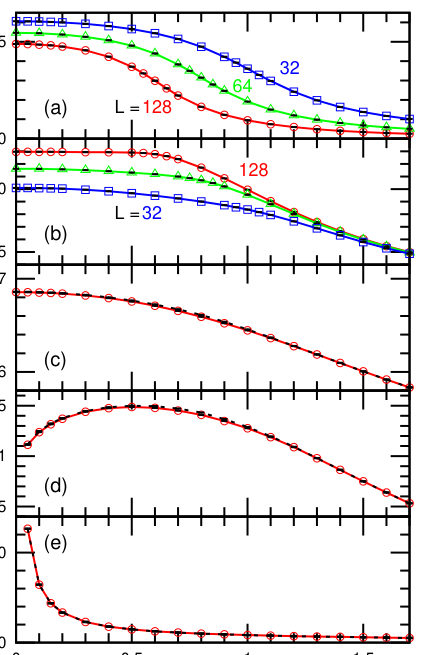
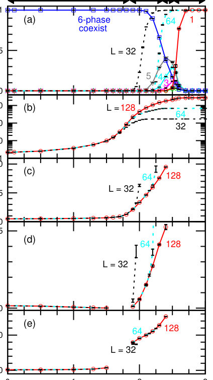
81 papers · 49 relevant · 2 highlighted
Every paper with at least one nonzero topic score, sorted by best-matching score. 🔥 marks scores ≥3/5. Click the title to jump to the full entry below; click [arXiv] to open the paper page. (secondary) marks papers from de-prioritized cond-mat archives.
measurement-induced transitions 5/5 · 🔥 entanglement & information structure 4/5 · 🔥 driven-dissipative phase transition 3/5 · 🔥 non-equilibrium dynamics 3/5 · 🔥 non-equilibrium universality 3/5 · correlated / nonlocal dissipation 2/5 · dissipative systems 2/5 · methods for driven-dissipative 2/5 · quantum measurements 2/5Rydberg arrays 5/5 · 🔥 analog quantum simulation 4/5 · 🔥 exotic spin models in light-matter 4/5 · 🔥 QC/QI experiment 3/5 · entanglement & information structure 2/5 · non-equilibrium dynamics 2/5 · quantum measurements 2/5dissipative systems 4/5 · 🔥 entanglement & information structure 4/5 · 🔥 driven-dissipative phase transition 3/5 · correlated / nonlocal dissipation 2/5 · methods for driven-dissipative 2/5 · non-equilibrium dynamics 2/5 · non-equilibrium universality 2/5dissipative systems 4/5 · 🔥 correlated / nonlocal dissipation 3/5 · 🔥 entanglement & information structure 3/5 · Tavis-Cummings & cavity-many-emitter 2/5 · methods for driven-dissipative 2/5 · non-equilibrium dynamics 2/5 · quantum measurements 2/5analog quantum simulation 4/5 · 🔥 Rydberg arrays 3/5 · 🔥 exotic spin models in light-matter 3/5 · 🔥 non-equilibrium dynamics 3/5 · entanglement & information structure 2/5 · scars & prethermalization 2/5methods for driven-dissipative 4/5 · 🔥 dissipative systems 3/5 · 🔥 entanglement & information structure 3/5 · correlated / nonlocal dissipation 2/5 · measurement-induced transitions 2/5 · quantum measurements 2/5dissipative systems 4/5 · 🔥 non-equilibrium dynamics 4/5 · 🔥 Keldysh / 2PI / non-Gaussian methods 3/5 · 🔥 non-equilibrium universality 3/5 · methods for driven-dissipative 2/5dissipative systems 4/5 · 🔥 methods for driven-dissipative 4/5 · 🔥 Kondo & dissipative impurity 3/5 · 🔥 non-equilibrium dynamics 3/5 · entanglement & information structure 2/5dissipative systems 4/5 · 🔥 Keldysh / 2PI / non-Gaussian methods 3/5 · 🔥 non-equilibrium dynamics 3/5 · correlated / nonlocal dissipation 2/5 · methods for driven-dissipative 2/5methods for driven-dissipative 4/5 · 🔥 Keldysh / 2PI / non-Gaussian methods 3/5 · 🔥 dissipative systems 3/5 · 🔥 non-equilibrium dynamics 3/5dissipative systems 4/5 · 🔥 entanglement & information structure 3/5 · correlated / nonlocal dissipation 2/5 · methods for driven-dissipative 2/5 · non-equilibrium dynamics 2/5spintronics-quantum-optics interface 4/5 · 🔥 correlated / nonlocal dissipation 3/5 · 🔥 dissipative systems 3/5 · quantum measurements 2/5quantum measurements 4/5 · 🔥 dissipative systems 3/5 · 🔥 non-equilibrium dynamics 3/5 · methods for driven-dissipative 2/5dissipative systems 4/5 · 🔥 non-equilibrium dynamics 3/5 · correlated / nonlocal dissipation 2/5 · methods for driven-dissipative 2/5dissipative systems 4/5 · 🔥 methods for driven-dissipative 4/5 · non-equilibrium dynamics 2/5QC/QI experiment 4/5 · dissipative systems 2/5 · quantum optics experiment 2/5non-equilibrium dynamics 4/5 · analog quantum simulation 2/5 · non-equilibrium universality 2/5Tavis-Cummings & cavity-many-emitter 4/5 · dissipative systems 2/5 · quantum measurements 2/5dissipative systems 4/5 · methods for driven-dissipative 2/5 · non-equilibrium dynamics 2/5quantum measurements 4/5 · entanglement & information structure 2/5QC/QI experiment 4/5(secondary) — 🔥 QC/QI experiment 4/5(secondary) — 🔥 dissipative systems 3/5 · 🔥 non-equilibrium dynamics 3/5 · correlated / nonlocal dissipation 2/5 · driven-dissipative phase transition 2/5 · methods for driven-dissipative 2/5 · non-equilibrium universality 2/5driven-dissipative phase transition 3/5 · 🔥 non-equilibrium dynamics 3/5 · 🔥 non-equilibrium universality 3/5 · dissipative systems 2/5 · methods for driven-dissipative 2/5driven-dissipative phase transition 3/5 · 🔥 non-equilibrium universality 3/5 · Keldysh / 2PI / non-Gaussian methods 2/5 · dissipative systems 2/5 · non-equilibrium dynamics 2/5dissipative systems 3/5 · entanglement & information structure 2/5 · methods for driven-dissipative 2/5 · non-equilibrium dynamics 2/5 · quantum measurements 2/5(secondary) — 🔥 non-equilibrium dynamics 3/5 · Keldysh / 2PI / non-Gaussian methods 2/5 · dissipative systems 2/5 · methods for driven-dissipative 2/5non-equilibrium dynamics 3/5 · correlated cavity matter 2/5 · driven-dissipative phase transition 2/5 · non-equilibrium universality 2/5entanglement & information structure 3/5 · dissipative systems 2/5 · quantum measurements 2/5entanglement & information structure 3/5 · dissipative systems 2/5quantum measurements 3/5 · analog quantum simulation 2/5QC/QI experiment 3/5entanglement & information structure 3/5Keldysh / 2PI / non-Gaussian methods 2/5 · dissipative systems 2/5 · methods for driven-dissipative 2/5 · non-equilibrium dynamics 2/5dissipative systems 2/5 · entanglement & information structure 2/5 · quantum measurements 1/5(secondary) — analog quantum simulation 2/5 · non-equilibrium dynamics 2/5methods for driven-dissipative 2/5 · non-equilibrium dynamics 2/5entanglement & information structure 2/5 · quantum measurements 2/5correlated cavity matter 2/5(secondary) — spintronics-quantum-optics interface 2/5Keldysh / 2PI / non-Gaussian methods 2/5Keldysh / 2PI / non-Gaussian methods 2/5(secondary) — spintronics-quantum-optics interface 2/5spintronics-quantum-optics interface 2/5(secondary) — Keldysh / 2PI / non-Gaussian methods 2/5(secondary) — spintronics-quantum-optics interface 2/5(secondary) — QC/QI experiment 2/5Keldysh / 2PI / non-Gaussian methods 2/5exotic spin models in light-matter 2/5Papers by authors on your watch list. Click the title to jump to the full entry below; click [arXiv] to open the paper page.
Papers from quant-ph and your primary cond-mat archives (quant-gas, stat-mech, str-el, dis-nn). Highlighted papers (⭐) come first, then everything else sorted by topic-relevance score, highest first.
← Index · ← Previous · Next →
Authors: Ekta Bhatia, Yingge Du, Krishna P Koirala, Chung Kow, Mingzhao Liu, Juan Macy, Tharanga R. Nanayakkara, Francisco Ponce, Satyavolu S. Papa Rao, Drew J. Rebar, Peter V. Sushko, Brent A VanDevender, Chongmin Wang, Marvin G. Warner, Zhihao Xiao
Type: experiment · Category: quantum information and computing · PDF: https://arxiv.org/pdf/2604.22086v1
Analysis basis: full PDF text, analyzed in chunks
Topic relevance: 🔥 QC/QI experiment 4/5
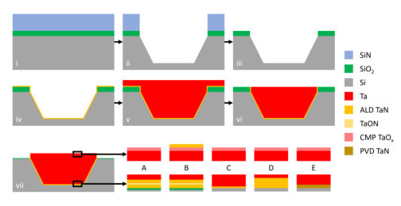
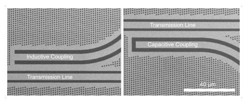
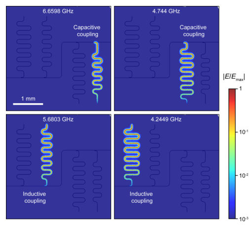
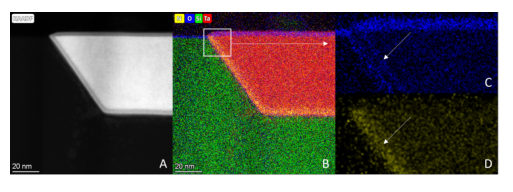
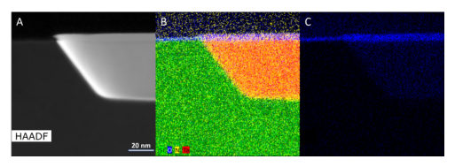
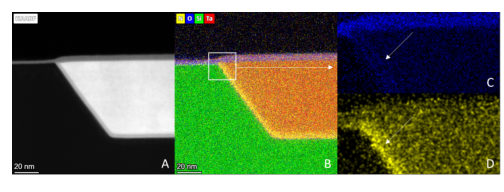
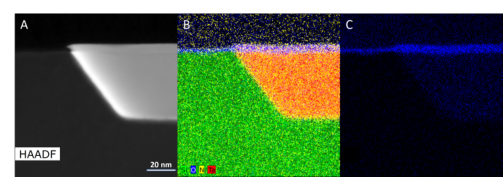
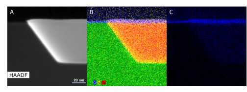
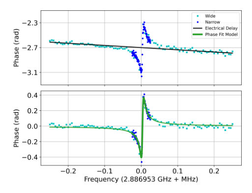
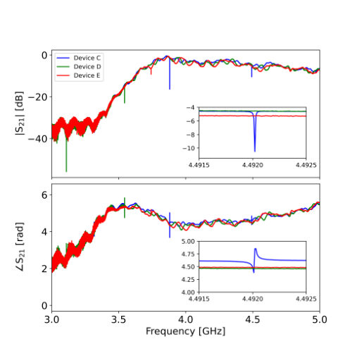
Main problem. Surface oxides on the sidewalls of superconducting tantalum devices contribute to dielectric losses, degrading the performance of transmon qubits.
Main result. The damascene fabrication process successfully replaces the metal/air interface with a metal/substrate interface, leading to a statistical improvement in quality factor of approximately 2x for pristine interfaces compared to buried oxide interfaces.
Method. The researchers used a 300 mm scale damascene process involving trench etching, Ta deposition, and chemical mechanical planarization (CMP), followed by cryogenic characterization and STEM/EDS analysis.
Summary. This paper investigates a new fabrication method called the damascene process to improve the quality of superconducting tantalum resonators. By embedding the metal within the substrate, the researchers replaced lossy metal/air sidewall interfaces with metal/substrate interfaces. The study demonstrates that avoiding native oxide formation at these interfaces can significantly increase the resonator's quality factor. This approach is highly scalable, utilizing 300 mm industrial-scale fabrication processes, which is crucial for the future of large-scale quantum computing hardware.
Model / system. The physical system consists of Tantalum (Ta) based superconducting coplanar waveguide (CPW) resonators fabricated on 300 mm Si (100) wafers, including both capacitive and inductive coupling configurations.
Key observables. Resonance frequencies, coupling quality factor (Qc), internal quality factor (Qi), kinetic inductance (Lki), and electric field distribution profiles.
Important parameters / regimes. Temperature range of 25 mK to 350 mK, power levels from -40 to -80 dBm, and 300 mm wafer scale.
Assumptions / limitations. The numerical simulations neglected kinetic inductance initially, requiring a post-hoc correction to match experimental resonance frequencies.
Figures summary. Figure 1 shows the damascene fabrication process flow; Figure 2 displays SEM images of the resonator structures; Figure 3 illustrates simulated electric field distributions; Figure 12 shows Qi as a function of temperature; Figure 13 compares quality factors across different device types.
Paper structure. The paper introduces the problem of surface oxides, describes the damascene fabrication process and experimental setup, presents numerical simulations and characterization results (STEM/EDS), discusses the performance of different device variants, and concludes with an analysis of loss mechanisms.
Surface oxides contribute to losses in superconducting transmon devices resulting in degraded performance. We explore the use of the damascene process to replace the sidewall native oxide of a device with a metal/substrate interface. We simulate sidewall oxidation by burying an oxide layer during fabrication. We observe a modest improvement between the two types of devices, which is suggestive of a reduction in the surface participation ratio.
Authors: Hiroshi Noguchi
Type: theory · Category: statistical mechanics · PDF: https://arxiv.org/pdf/2604.22353v1
Analysis basis: full PDF text, analyzed in chunks
Topic relevance: 🔥 driven-dissipative phase transition 3/5 · 🔥 non-equilibrium dynamics 3/5 · 🔥 non-equilibrium universality 3/5 · dissipative systems 2/5 · methods for driven-dissipative 2/5









Main problem. The study aims to characterize various spatiotemporal wave modes (spiral, target, stripe, and disordered) and their phase transitions in a non-equilibrium six-state Potts model.
Main result. The researchers identified distinct wave modes (SP, TG, ST, and DS) and found that the transition between even- and odd-numbered state dominance is a first-order transition. They also distinguished between forward and backward three-state waves based on their boundary dynamics.
Method. Monte Carlo simulations using the Metropolis algorithm were performed on square and hexagonal lattices to observe pattern formation and coarsening dynamics.
Summary. This paper investigates the variety of wave patterns that emerge in an active six-state Potts model. By using Monte Carlo simulations, the author identifies spiral, target, stripe, and disordered waves and maps their existence across different interaction energies. The study reveals that transitions between certain wave modes are first-order and explores how these patterns evolve during coarsening. The findings provide a detailed classification of complex spatiotemporal dynamics in non-equilibrium statistical mechanics.
Model / system. An active six-state Potts model on 2D square and hexagonal lattices, which is a non-equilibrium system where local balance holds but global detailed balance is violated.
Key observables. Temporal and spatial correlation functions, oscillation amplitude and period, probability of phase coexistence, cluster size, and the wave ratio order parameter.
Important parameters / regimes. Flipping energy (h), non-flip contact energy (Jnf), contact energy for same states (Jkk), and diagonal state interactions.
Assumptions / limitations. The system is assumed to follow local balance for flips between neighboring states, and the dynamics are governed by a rock-paper-scissors-like mechanism.
Figures summary. Figure 1 shows a phase diagram of modes; Figure 7 shows the dependence of various quantities on contact energy; Figure 12 demonstrates first-order transition behavior via the scaling of susceptibility.
Paper structure. The paper introduces the active Potts model, presents a phase diagram of wave modes, analyzes the quantitative transition between disordered and spiral waves, investigates the emergence of target and stripe waves, details the dynamics of three-state waves, and concludes with a discussion on lattice robustness and transition types.
Why it may be interesting. The study of non-equilibrium phase transitions and pattern formation in multi-state systems is highly relevant to understanding driven-dissipative dynamics in open quantum systems and active matter.
Wave propagation can be observed in various nonequilibrium systems. In this study, we investigated the properties of several wave modes in active six-state Potts models using Monte Carlo simulations of square and hexagonal lattices. Disordered and spiral (SP) waves of six states are formed under weak and strong repulsions at nonflip contacts, respectively. The target (TG) and stripe (ST) waves were found to emerge under stronger repulsion. These three wave modes (SP, TG, and ST) can temporally coexist in small systems near the transition points but they do not switch in large systems or far from these transition points. During coarsening from randomly mixed states to ST waves, SP waves appear at an intermediate stage. The SP wave modes of three even- or odd-numbered states (states $s=0,2,4$ or $s=1,3,5$) emerge under two conditions: repulsion at the diagonal contact and attraction at nonflip contacts. Previously thought to be identical for both conditions, the wave types were found to differ, comprising forward and backward waves ($s=1\to 3\to 5\to 1$ or $s=1\to 5\to 3\to 1$), whose domain boundaries move by the two-step and four-step forward flips, respectively. The transition between the waves of the even- and odd-numbered states is first-order for both the forward and backward waves.
Authors: Zhongpu Qiu, Tianyi Wu, Linkai Zhang, Sheng Fang, Jun Meng, Jingfang Fan, Hugues Chaté
Type: theory · Category: statistical mechanics · PDF: https://arxiv.org/pdf/2604.22151v1
Analysis basis: full PDF text, analyzed in chunks
Topic relevance: 🔥 driven-dissipative phase transition 3/5 · 🔥 non-equilibrium universality 3/5 · Keldysh / 2PI / non-Gaussian methods 2/5 · dissipative systems 2/5 · non-equilibrium dynamics 2/5
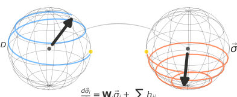
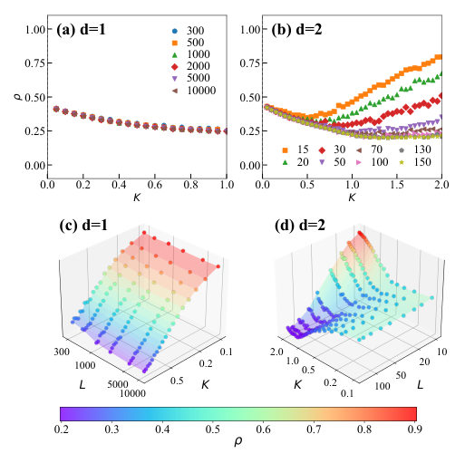
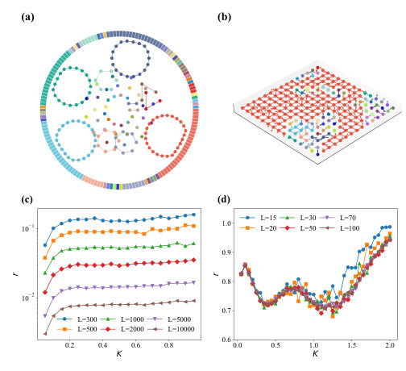
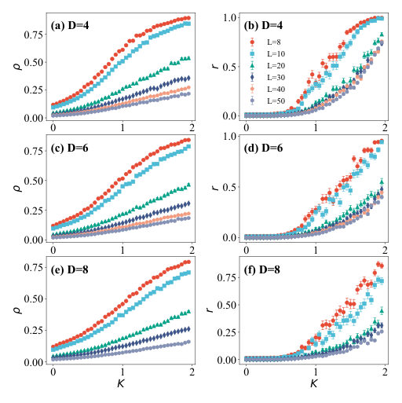
Main problem. Investigating whether quenched frequency disorder can stabilize long-range order (LRO) in low-dimensional (d=1, 2) vector Kuramoto oscillators, thereby circumventing the Hohenberg-Mermin-Wagner theorem.
Main result. Long-range order emerges in low-dimensional lattices only for odd-dimensional oscillators (D), where quenched noise acts as a stabilizing mechanism that maps the system to an effective ferromagnetic model.
Method. The authors use two-body dynamics analysis, large-scale numerical simulations, and a real-space renormalization group (RG) framework combined with Bogoliubov-Krylov averaging.
Summary. The paper explores the emergence of long-range order in $D$-dimensional Kuramoto oscillators on 1D and 2D lattices. It discovers a parity effect where order only appears when the oscillator dimension $D$ is odd. This happens because odd-$D$ systems possess a null space in their frequency matrices that allows for synchronization, effectively mapping the system to a ferromagnetic model. In contrast, even-$D$ systems remain disordered. The study highlights how quenched noise can serve as a stabilizing force against the fluctuations that usually prevent order in low dimensions.
Model / system. A D-dimensional vector Kuramoto model (DDKM) on 1D and 2D lattices, featuring alignment coupling and quenched noise introduced via antisymmetric intrinsic frequency matrices.
Key observables. Orientational order parameter (rho) and frequency order parameter (r, measuring the fraction of entrained oscillators).
Important parameters / regimes. Oscillator dimension (D), lattice dimension (d), coupling strength (K), and the presence of quenched frequency disorder.
Assumptions / limitations. The analysis assumes the use of antisymmetric matrices for frequency disorder and focuses on the thermodynamic limit via RG.
Figures summary. Figure 4 shows the decay of order parameters (rho and r) versus coupling strength (K) for even-D oscillators, demonstrating the absence of LRO.
Paper structure. The paper introduces the model and the problem of LRO in low dimensions, analyzes microscopic two-body dynamics, presents large-scale numerical simulations, performs a real-space renormalization group analysis, and concludes by comparing the results to standard continuous symmetry models.
Why it may be interesting. This work is highly relevant to many-body dynamics as it demonstrates a novel mechanism where quenched disorder, typically a source of decoherence or disorder, actually stabilizes long-range order in low-dimensional systems.
We show that the long-range order (LRO) strikingly emerges in systems of locally coupled $D$-dimensional vector Kuramoto oscillators on low-dimensional lattices ($d=1,2$), but only for odd $D$. This parity-dependent effect is traced to two-oscillator dynamics, where odd-$D$ units synchronize for any coupling, while even-$D$ pairs require a finite threshold. This fundamental difference selectively seeds collective order in large-scale systems, a phenomenon demonstrated by our numerical simulations. A renormalization group analysis reveals a RG flow to a weak-coupling fixed point for $d \le 2$. In this limit, odd-$D$ systems effectively map to a ferromagnetic model, developing an ordered ``hemisphere" phase, whereas even-$D$ systems remain disordered. Our findings further reveal orientational LRO emerges in both $d=1$ and $d=2$, but frequency LRO requires $d=2$. We contrast these results with the established behavior of models possessing continuous symmetry, highlighting how quenched disorder provides a fundamentally new route to order.
Authors: Noah Kaufmann, Kasper Hede Nielsen, Anders Søndberg Sørensen
Type: theory · Category: quantum information and computing · PDF: https://arxiv.org/pdf/2604.22368v1
Analysis basis: full PDF text, analyzed in chunks
Topic relevance: 🔥 dissipative systems 3/5 · entanglement & information structure 2/5 · methods for driven-dissipative 2/5 · non-equilibrium dynamics 2/5 · quantum measurements 2/5
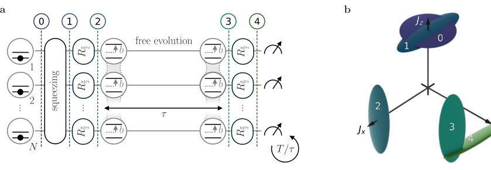
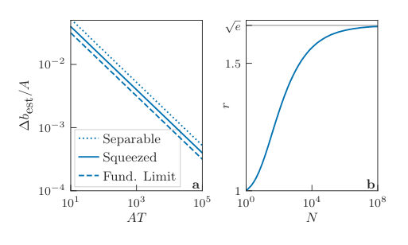
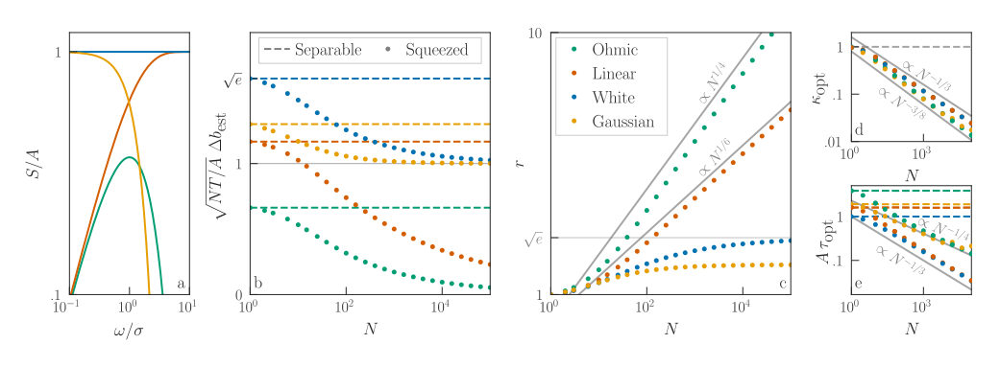
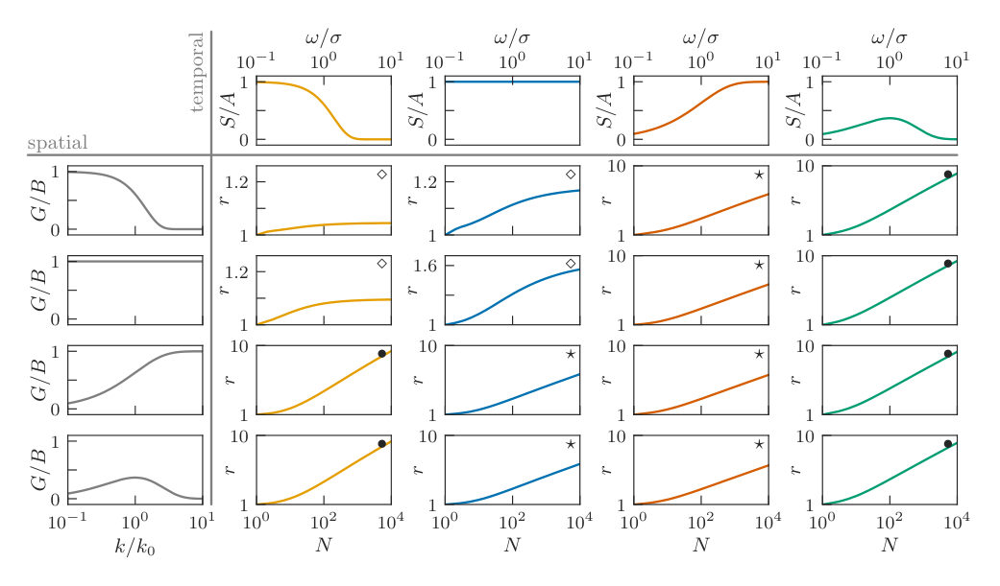
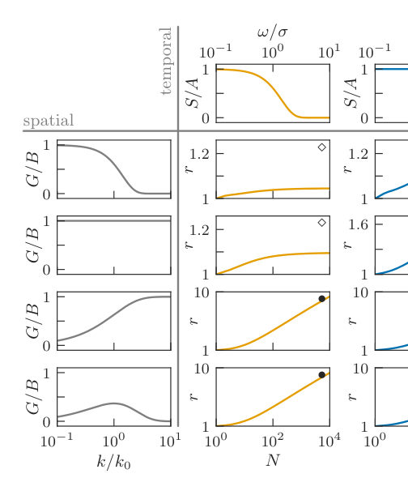
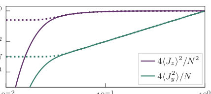
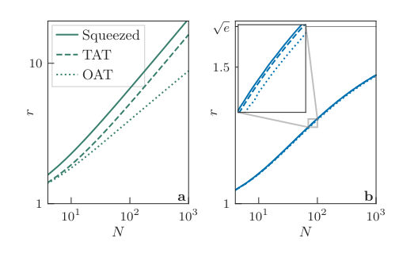
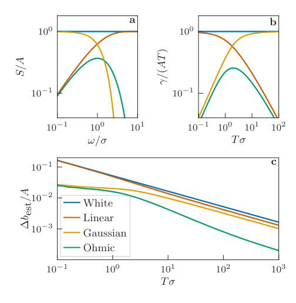
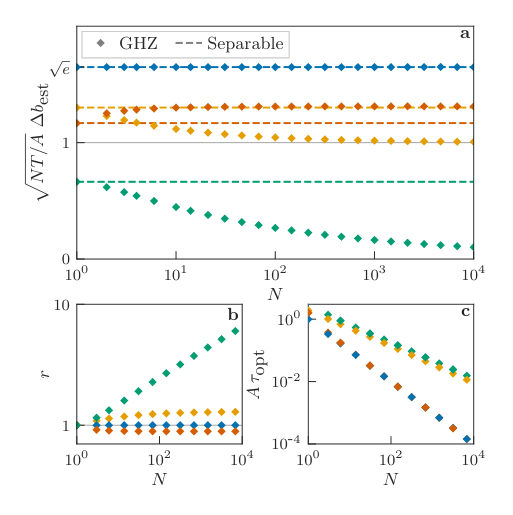
Main problem. Investigating whether entanglement, specifically via spin-squeezed states, can enhance the sensitivity of frequency estimation in Ramsey spectroscopy when qubits are subject to non-Markovian, spatially and temporally correlated dephasing noise.
Main result. The study finds that while entanglement provides no scaling advantage for noise with a non-zero zero-frequency component (like White or Gaussian noise), it enables scaling beyond the Standard Quantum Limit for noise with a vanishing zero-frequency component (like Linear or Ohmic noise), achieving uncertainties as low as N^{-3/4}.
Method. The authors use an analytical framework involving Fourier decomposition of the effective Hamiltonian, the Wiener-Khinchin theorem, and optimization of interrogation time and squeezing parameters to derive scaling laws for various noise spectra.
Summary. This paper explores how entanglement can improve the precision of frequency estimation in the presence of complex, non-Markovian noise. It demonstrates that the ability to surpass the Standard Quantum Limit depends critically on whether the noise spectrum has a non-zero component at zero frequency. For specific types of noise, such as Ohmic or Linear noise, the authors show that spin-squeezed states can achieve significantly better scaling of sensing uncertainty with the number of probes than separable states. This provides important theoretical insights for developing quantum sensors that are resilient to correlated environmental noise.
Model / system. A collection of N two-level systems (qubits) undergoing Ramsey spectroscopy, subject to a classical, pure dephasing noise model that is stationary, translationally invariant, and non-Markovian.
Key observables. Estimation uncertainty (variance) of the frequency b, metrological gain (r), and dephasing rate gamma(tau).
Important parameters / regimes. Number of probes (N), total interrogation time (T), squeezing parameter (kappa), and noise power spectra (White, Gaussian, Linear, Ohmic).
Assumptions / limitations. The noise is treated as a classical stochastic process (valid for high-temperature bosonic baths), the dephasing is pure (no X or Y components), and the analysis assumes the long-time and large-N limits.
Figures summary. Figure 4 shows metrological gain as a function of N for various noise combinations; Figure 8 displays scaled uncertainty, metrological gain, and optimal interrogation time for GHZ states across different noise spectra.
Paper structure. The paper introduces the problem of sensing under correlated noise, defines the Hamiltonian and noise models, derives a fundamental sensitivity limit based on SNR, analyzes specific scaling laws for different noise spectra (White, Gaussian, Linear, Ohmic), compares different entangled states (OAT, TAT, GHZ), and concludes with optimization results.
Why it may be interesting. This paper is highly relevant for researchers in open quantum systems and quantum metrology because it identifies specific noise-correlation regimes where entanglement-enhanced sensing can bypass the Standard Quantum Limit, providing a roadmap for designing robust quantum sensors.
Entanglement has been proposed as a means to improve the sensitivity of sensing weak signals. While the degree of this quantum advantage is well understood in noiseless settings, the situation is more complex under realistic conditions, where the system is subject to decoherence. In this case, the enhancement depends on the specific noise characteristics. Previous treatments of colored noise typically assume that the noise is uncorrelated between successive experiments. Here, we consider the scenario in which the noise exhibits correlations across multiple shots. We derive a simple fundamental limit to the sensitivity based on the fact that the sensitivity cannot be better than the signal-to-noise ratio seen by the probe. Focusing on Ramsey spectroscopy with probes affected by pure classical dephasing, we show that, for suitable spatial and temporal noise correlations, entangled probes achieve a better scaling of the sensitivity with the number of probes than separable states. This demonstrates that entanglement can provide a substantial improvement for Ramsey spectroscopy subject to correlated noise.
Authors: Poulami Ghosh, Anupama Chauhan, Sidhanta Sahu, Sk Kalimuddin, Mintu Mondal, N. Kamaraju
Type: experiment · Category: strongly correlated electrons · PDF: https://arxiv.org/pdf/2604.22218v1
Analysis basis: full PDF text, analyzed in chunks
Topic relevance: 🔥 non-equilibrium dynamics 3/5 · correlated cavity matter 2/5 · driven-dissipative phase transition 2/5 · non-equilibrium universality 2/5
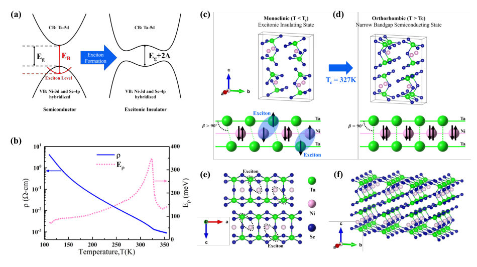
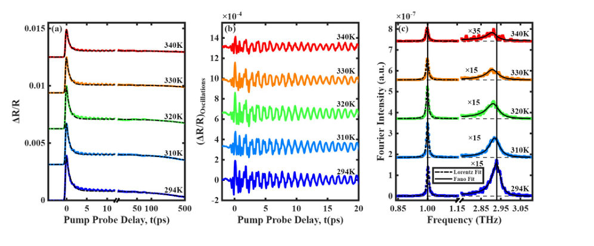
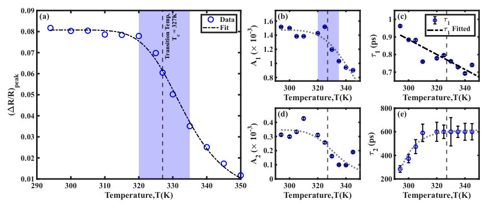


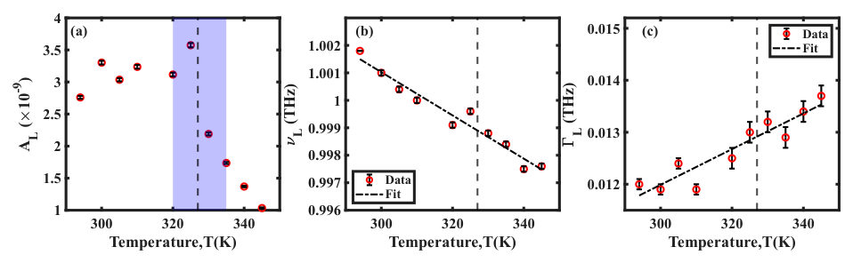
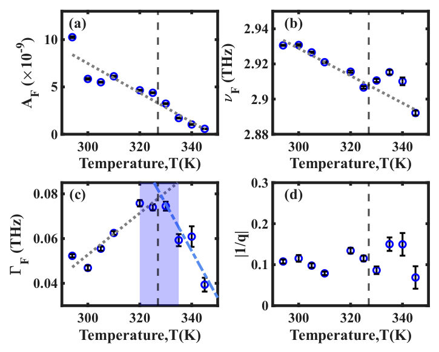
Main problem. The study aims to understand the hierarchy of relaxation pathways and the role of exciton-phonon coupling in the excitonic insulator Ta2NiSe5 (TNSe), specifically investigating the nature of the long-lived relaxation channel.
Main result. The researchers discovered an unusually long-lived relaxation channel (280-600 ps) attributed to an exciton-phonon bottleneck and identified two distinct coherent phonon modes, one of which (1.0 THz) is strongly coupled to the excitonic order parameter.
Method. Temperature-dependent, non-degenerate optical pump-probe spectroscopy with an extended temporal window up to 500 ps was used to monitor transient reflectivity.
Summary. This paper investigates the ultrafast dynamics of the excitonic insulator Ta2NiSe5 using extended-window pump-probe spectroscopy. It reveals a previously hidden, long-lived relaxation channel lasting up to 600 ps, which is caused by a bottleneck between excitons and nonequilibrium phonons. The study also distinguishes between phonon modes that couple to the excitonic order parameter and those that are purely structural. These findings provide a clearer picture of how electronic and lattice degrees of freedom interact during a phase transition.
Model / system. The physical system is Ta2NiSe5 (TNSe), a layered narrow-gap semiconductor exhibiting a concomitant excitonic-insulator and structural phase transition at Tc approx 327 K. The dynamics are analyzed using a modified Rothwarf-Taylor model and an exciton-phonon bottleneck framework.
Key observables. Transient differential reflectivity (delta R/R), relaxation time constants (tau1, tau2), coherent phonon frequencies and amplitudes, and the Fano asymmetry parameter.
Important parameters / regimes. Transition temperature Tc approx 327 K, pump wavelength 3.14 eV, probe wavelength 1.57 eV, and relaxation scales ranging from sub-picosecond to 600 ps.
Assumptions / limitations. The analysis assumes the electronic background can be modeled by a multi-exponential decay and that the phonon dynamics can be described by cubic anharmonic decay or Fano-like interference.
Figures summary. Fig 1 shows the schematic of the excitonic insulator transition, resistivity anomalies, and crystal structures. Fig 2 shows temperature-dependent transient reflectivity. Fig 5 shows the temperature dependence of phonon amplitudes, frequencies, and linewidths.
Paper structure. The paper introduces the excitonic insulator phase in TNSe, describes the experimental setup and sample growth, presents the discovery of the slow relaxation channel, analyzes the temperature dependence of electronic and phonon modes, and concludes with the implications for exciton-phonon dynamics.
Why it may be interesting. The discovery of a long-lived exciton-phonon bottleneck and the observation of Higgs-like mode coupling to the condensate are highly relevant to many-body dynamics and the study of non-equilibrium phase transitions.
An excitonic insulator represents a quantum phase in which spontaneous condensation of excitons leads to novel many-body phenomena. Ta$_2$NSi$_5$ (TNSe), a layered narrow-gap semiconductor, has emerged as a model platform to probe these correlated excitonic phases and their underlying dynamics below 327 K. In this work, we investigate the nonequilibrium dynamics of TNSe using temperature-dependent, non-degenerate optical pump-probe spectroscopy with a 3.14 eV pump and a 1.57 eV probe, extending the accessible pump-probe delay window up to 500 ps. In addition to the well-established sub-picosecond relaxation channel ($\sim$ 0.7- 0.9 ps) associated with carrier cooling and recombination, accompanied by exciton reformation, we uncover a much slower recovery process with a decay time of $\sim$ 280-600~ps, significantly longer than previously reported. We attribute this unusually prolonged recovery to enhanced scattering between excitons and nonequilibrium phonons, which delays the re-establishment of equilibrium excitonic correlations. On top of this bi-exponential background, we observe two coherent phonon modes at 1.0 and 2.9 THz with distinctly different coupling behaviors. The 1.0 THz mode exhibits an order-parameter-like temperature dependence, consistent with strong coupling to the excitonic condensate in TNSe. In contrast, the 2.9 THz mode does not exhibit any discernible coupling to the excitonic order parameter, and appears to arise from anharmonic lattice dynamics associated with the structural phase transition. Together, these results elucidate the hierarchy of relaxation pathways in TNSe and highlight the importance of extending the temporal detection window in pump-probe measurements to fully capture long-lived exciton-phonon dynamics.
Authors: Lukáš Lachman, Carlos E. Lopetegui-González, Massimo Frigerio, Mattia Walschaers
Type: theory · Category: quantum information and computing · PDF: https://arxiv.org/pdf/2604.22295v1
Analysis basis: full PDF text, analyzed in chunks
Topic relevance: 🔥 entanglement & information structure 3/5 · dissipative systems 2/5 · quantum measurements 2/5
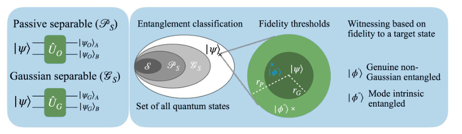
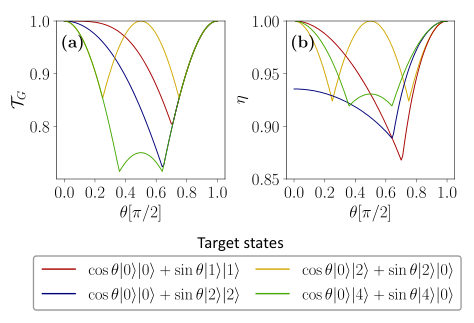
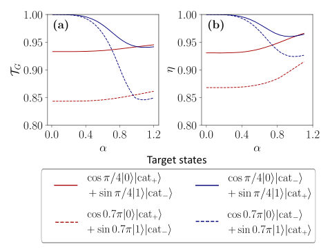
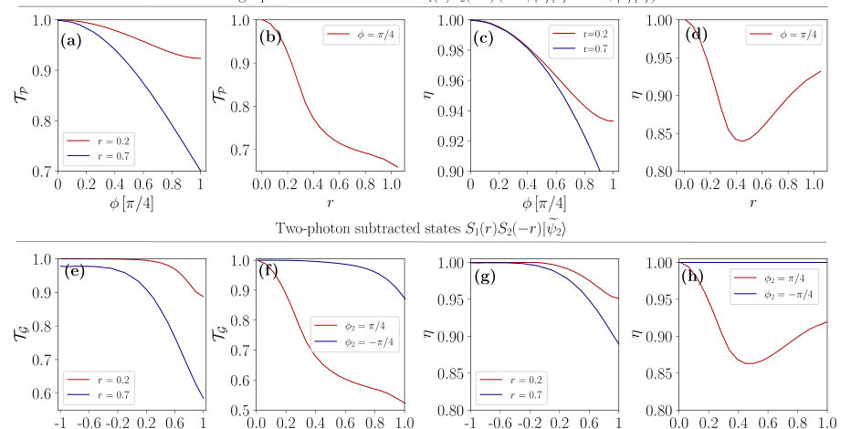
Main problem. Developing a method to certify 'genuine non-Gaussian entanglement'—entanglement that cannot be produced from separable states using any Gaussian evolution.
Main result. The authors establish a fidelity-based certification framework that identifies thresholds for recognizing non-Gaussian entanglement and demonstrates its robustness against transmission loss in Fock and hybrid states.
Method. A resource theory approach using fidelity to target states compared against calculated thresholds, utilizing the CMA-ES genetic algorithm for optimizing Gaussian unitaries.
Summary. This paper introduces a new method to certify genuine non-Gaussian entanglement in bosonic systems. By comparing the fidelity of an experimental state to a target state against a calculated threshold, the authors can distinguish entanglement that is fundamentally non-Gaussian from that which can be generated via Gaussian operations. The study demonstrates this method on Fock states and hybrid states, providing insights into how much loss these states can tolerate while remaining certifiable. This work bridges the gap between entanglement theory and the practical verification of non-Gaussian quantum resources.
Model / system. Two-mode bosonic systems, specifically focusing on continuous-variable (CV) and hybrid (DV-CV) encodings, including Fock states, photon-subtracted states, and cat-state superpositions.
Key observables. Fidelity (F), stellar rank, and transmission efficiency (eta).
Important parameters / regimes. Squeezing parameter (r), superposition angle (theta), cat state spacing (alpha), and photon subtraction mode (phi).
Assumptions / limitations. The analysis is primarily constrained to pure 2-mode states and assumes a convex resource theory framework for handling mixed states.
Figures summary. Figure 1 shows the hierarchy of state spaces and the concept of robustness; Figures 4a-h illustrate fidelity thresholds and loss tolerance as functions of squeezing, subtraction angles, and transmission efficiency.
Paper structure. The paper introduces the problem of non-Gaussian entanglement, defines the resource theory framework, presents the fidelity-based certification method, applies it to various bosonic states (Fock, hybrid, photon-subtracted), analyzes loss tolerance, and provides a mathematical decomposition of Gaussian dynamics.
Why it may be interesting. It provides a practical tool for quantum optical experimentalists to verify the presence of high-level quantum resources (non-Gaussianity) that are essential for fault-tolerant quantum computing and advanced quantum metrology.
Entanglement is a key resource for many quantum applications. Understanding fundamental properties of entangled states is an important step towards their practical exploitation. We characterize entanglement in the context of Gaussian and non-Gaussian processes and identify entangled states that cannot be produced by any Gaussian evolution acting on separable states. This distinction exposes intrinsic limitations of Gaussian operations and highlights the role of non-Gaussian operations as an important resource. We apply this framework to develop a certification method that connects entanglement theory with quantum non-Gaussianity - an advanced quantum feature that is essential for several quantum applications. Our approach tailors the certification to experimentally relevant states that can be produced in current quantum optics experiments. We demonstrate this certification for recognizing the genuine non-Gaussian entanglement of various entangled Fock states and hybrid entangled states.
Authors: Alessandro Romancino
Type: theory · Category: quantum information and computing · PDF: https://arxiv.org/pdf/2604.21967v1
Analysis basis: full PDF text, analyzed in chunks
Topic relevance: 🔥 entanglement & information structure 3/5 · dissipative systems 2/5
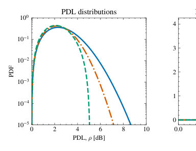
Main problem. Investigating how heterogeneity in edge entanglement, specifically caused by polarization-dependent loss (PDL), affects entanglement percolation in quantum networks.
Main result. The study demonstrates that while Random Classical Entanglement Percolation (RCEP) depends only on the mean singlet-conversion probability, Random Quantum Entanglement Percolation (RQEP) depends on the full distribution of probabilities due to the quantum penalty of the q-swap protocol.
Method. The author uses a mathematical mapping between PDL magnitude and singlet-conversion probabilities (SCP) and analyzes the percolation thresholds using RCEP and RQEP frameworks with q-swap preprocessing.
Summary. This paper explores how random fluctuations in edge entanglement affect the ability to establish long-range connectivity in quantum networks. By focusing on polarization-dependent loss in photonic networks, the author shows that the distribution of entanglement quality matters significantly for quantum protocols. Specifically, the 'quantum penalty' in RQEP makes the network performance sensitive to the entire probability distribution of the edges, not just the average. This provides a more realistic framework for designing robust quantum communication infrastructures.
Model / system. A photonic quantum network where qubits are encoded in orthogonal polarization modes and edges are subject to random singlet-conversion probabilities (SCPs) induced by polarization-dependent loss (PDL).
Key observables. Singlet-conversion probability (SCP), PDL magnitude (in dB), and the quantum penalty constant (C).
Important parameters / regimes. PDL magnitude (P), mean SCP (mu), standard deviation (sigma), and the weak-PDL regime.
Assumptions / limitations. The study focuses specifically on PDL as a source of randomness and assumes the use of the q-swap preprocessing protocol.
Figures summary. Figure 1 shows the probability density of PDL for three different models (left) and the resulting induced SCP densities (right).
Paper structure. The paper begins by recalling classical and quantum entanglement percolation, introduces the PDL-induced SCP model, derives the mapping between PDL and SCP, analyzes the RCEP and RQEP regimes, and concludes with specific examples of induced distributions from real-world PDL models.
Why it may be interesting. It provides a concrete physical link between realistic fiber-optic impairments (PDL) and the fundamental limits of entanglement distribution in quantum networks.
We study random entanglement percolation in heterogeneous quantum networks, where the singlet-conversion probabilities (SCPs) of the edges are drawn from a probability distribution rather than being fixed. After briefly recalling random classical and random quantum entanglement percolation, we focus on polarization-dependent loss (PDL) as a physical source of random edge entanglement in photonic networks. In this setting, polarization imbalance induces a simple map from the PDL magnitude to the edge SCP. We illustrate this map for representative PDL models and discuss the resulting implications for entanglement percolation.
Authors: Francesco Toppan
Type: theory · Category: quantum information and computing · PDF: https://arxiv.org/pdf/2604.22178v1
Analysis basis: full PDF text, analyzed in chunks
Topic relevance: 🔥 quantum measurements 3/5 · analog quantum simulation 2/5
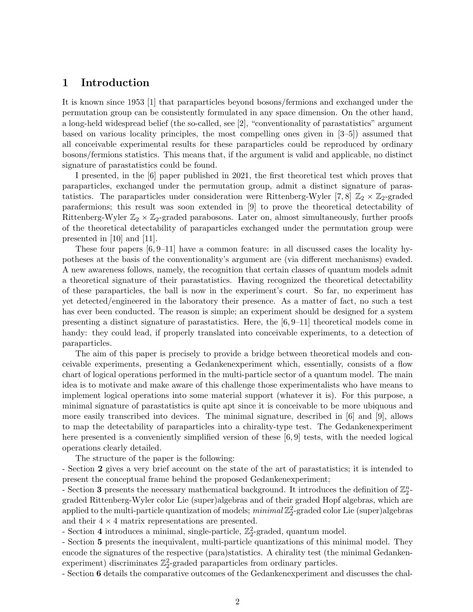
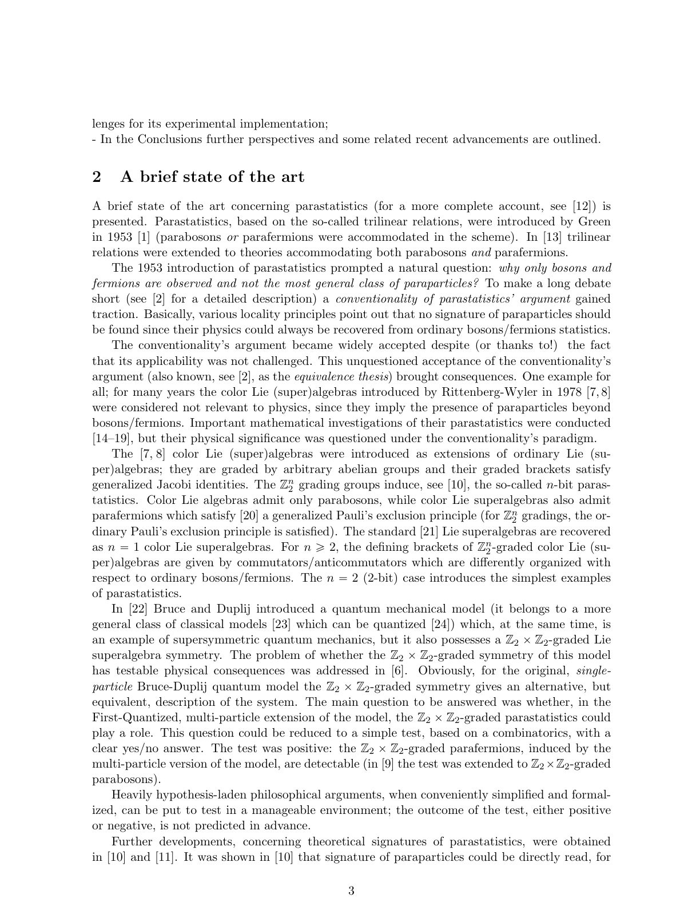
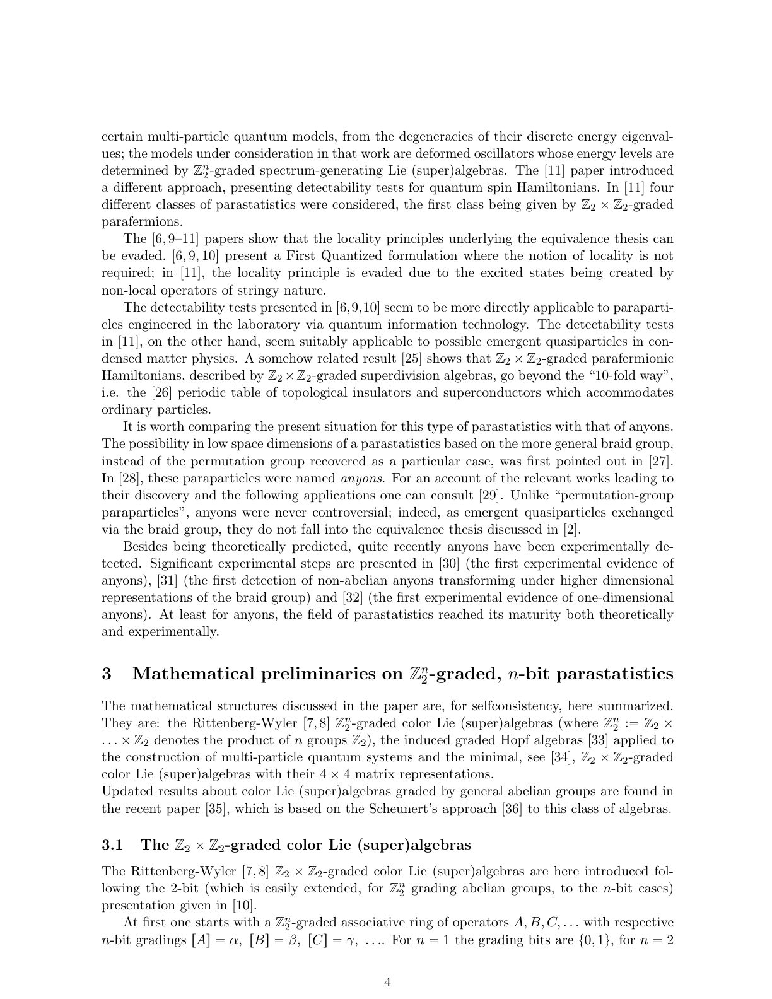
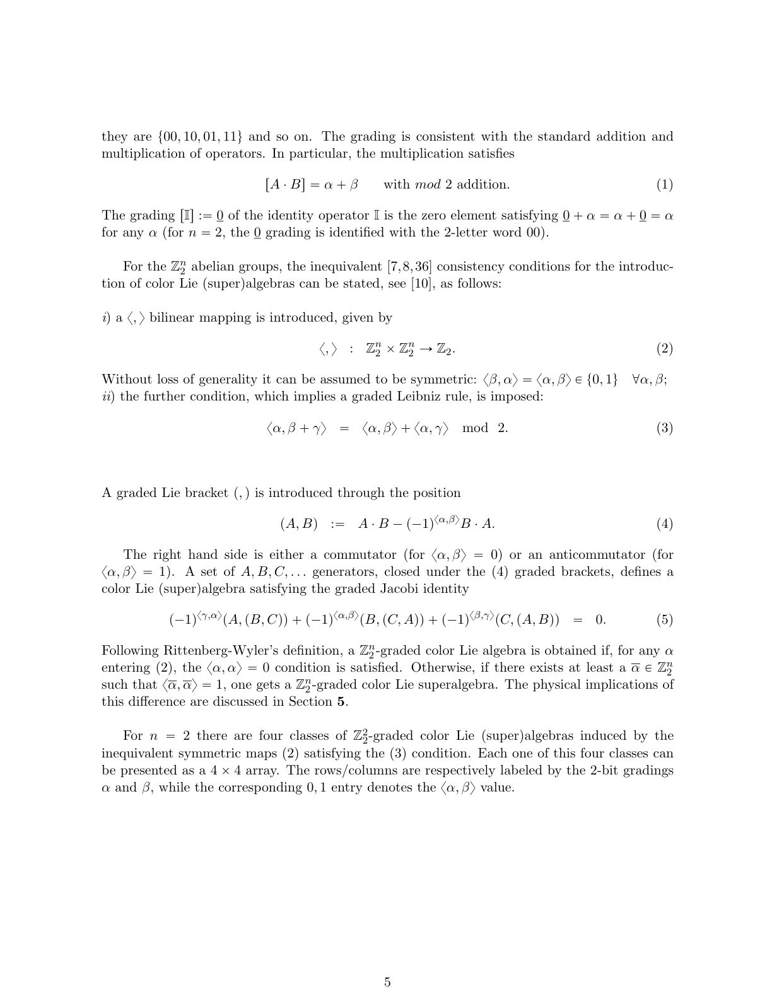
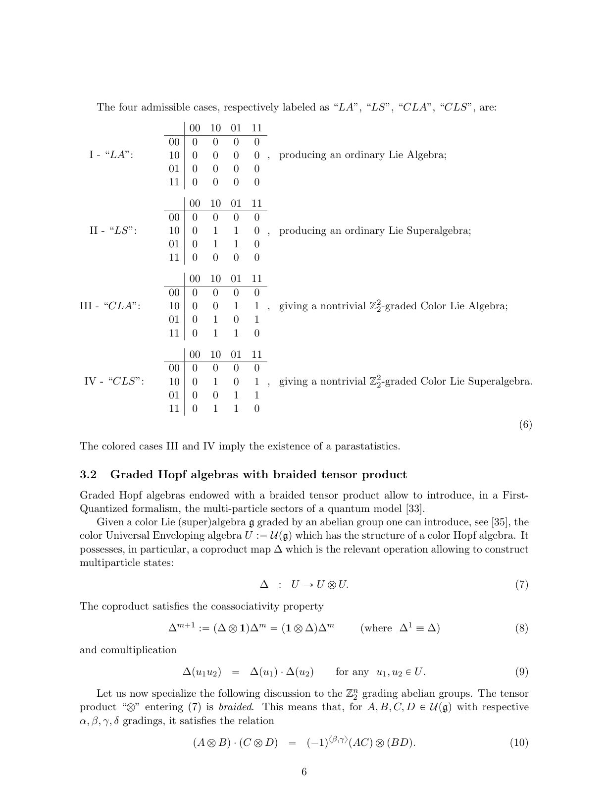
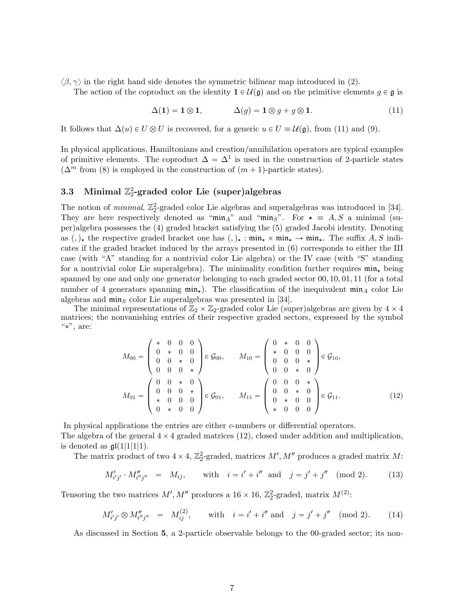
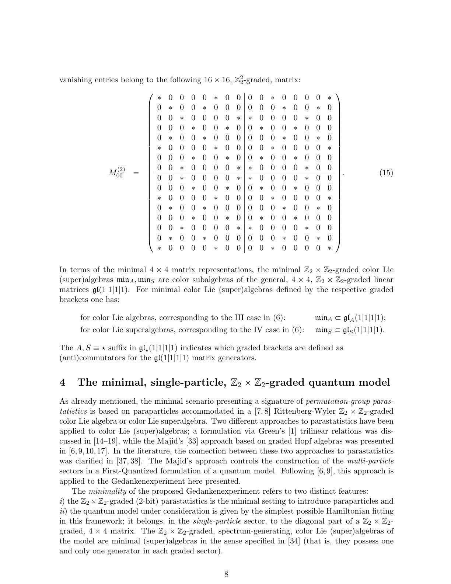
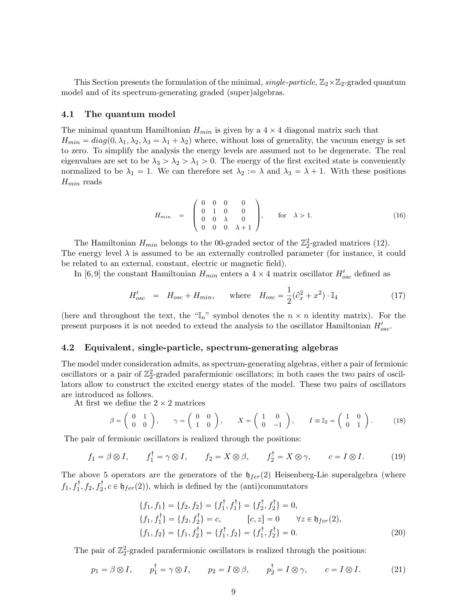
Main problem. The paper seeks to bridge the gap between the theoretical existence of permutation-group parastatistics and the lack of experimental methods to detect them, specifically addressing whether these particles can be distinguished from ordinary bosons and fermions.
Main result. The author provides a minimal Gedankenexperiment that maps the detection of Z2 x Z2-graded colored paraparticles onto a measurable chirality-type parity test, demonstrating that certain parastatistical signatures are physically inequivalent to ordinary statistics.
Method. The study uses the mathematical framework of Z2 x Z2-graded color Lie (super)algebras and graded Hopf algebras to construct multi-particle sectors and proposes a 'yes/no' projection measurement approach.
Summary. This paper proposes a simplified thought experiment to detect 'colored' paraparticles, which are particles that follow statistics governed by the permutation group rather than just the braid group. By using the mathematical framework of color Lie superalgebras, the author shows that these particles possess unique physical signatures in their multi-particle energy spectra and eigenvectors. The detection method is simplified into a parity test that can be implemented using qudits, specifically ququarts. This work is significant because it challenges the long-held belief that parastatistics are indistinguishable from ordinary bosons and fermions.
Model / system. A minimal single-particle quantum model with a 4-dimensional Hilbert space and a diagonal Hamiltonian, which is then extended to a 2-particle sector. The proposed experimental platform is the manipulation of qudits, specifically ququarts (d=4).
Key observables. Energy eigenvalues, energy level degeneracy, and a chirality-type parity measurement via Hermitian projection operators.
Important parameters / regimes. The energy level spacing parameter lambda, the sign parameter epsilon (distinguishing fermions from parafermions), and the Z2 x Z2 grading bits.
Assumptions / limitations. The experiment assumes the energy levels are non-degenerate and relies on a calibration test where the first measurement is assumed to represent ordinary statistics.
Figures summary. The paper includes an array showing four classes of symmetric bilinear maps and a matrix displaying the structure of 4x4 minimal matrix representations for different graded sectors.
Paper structure. The paper progresses from the mathematical background of Z2 x Z2 grading to a minimal single-particle model, followed by multi-particle quantizations, and concludes with a chirality-based detection test for experimentalists.
Why it may be interesting. It provides a concrete theoretical roadmap for using high-dimensional quantum computing (qudits) to simulate and detect exotic particle statistics that go beyond the standard bosonic and fermionic paradigms.
Paraparticles beyond bosons and fermions can be exchanged via either the braid group (anyons, existing up to $D=2$ space dimensions) or the permutation group; in the latter case the space dimensions are not limited. Besides being predicted, anyons have been experimentally detected. The situation differs for paraparticles exchanged via the permutation group ("permutation-group parastatistics").The first test to detect their theoretical signature was published in 2021 (for $Z_2\times Z_2$-graded parafermions; it was soon followed by a second paper proving the detectability of $Z_2\times Z_2$-graded parabosons). Later on, two further papers proved theoretical signatures of permutation-group parastatistics. These works demonstrate that, in certain situations, a long-held belief on the "conventionality of parastatistics" argument can be evaded: some measurements of permutation-group paraparticles cannot be recovered from ordinary bosons/fermions. The main question now is how to experimentally detect or engineer in the laboratory such paraparticles. For this aim a minimal setup for the theoretical test is here provided: a Gedankenexperiment (a simplified version of the two tests published in 2021) which, essentially, is a flow chart of logical operations. The key point is to present, to experimentalists, the necessary steps to be simulated/realized in the laboratory (possibly, by manipulating qudits). In this minimal setup, the detection/engineering of paraparticles is mapped into a chirality test. The mathematical setting is based on $Z_2\times Z_2$-graded color Lie (super)algebras and derived mathematical structures.
Authors: Monit Sharma, Hoong Chuin Lau
Type: both · Category: quantum information and computing · PDF: https://arxiv.org/pdf/2604.22194v1
Analysis basis: full PDF text, analyzed in chunks
Topic relevance: 🔥 QC/QI experiment 3/5

Main problem. The scalability of the Capacitated Vehicle Routing Problem (CVRP) on NISQ devices is limited by the high qubit and gate requirements of direct QUBO encodings and the instability of classical optimization parameters in noisy environments.
Main result. The authors developed an end-to-end hybrid pipeline that uses Lagrangian decomposition to reduce qubit requirements and a learned RL-based controller to stabilize multiplier updates, achieving significantly lower optimality gaps on real hardware compared to classical subgradient methods.
Method. A hybrid framework combining Lagrangian relaxation to decompose CVRP into bounded-width knapsack subproblems, a reinforcement learning policy (PPO) for multiplier updates, and a constrained contextual bandit for hardware-aware execution.
Summary. This paper presents a practical end-to-end framework for solving large-scale vehicle routing problems using near-term quantum computers. By decomposing the complex CVRP into smaller, manageable knapsack subproblems, the authors bypass the qubit-width bottleneck. They further enhance performance by using reinforcement learning to stabilize the optimization loop and a contextual bandit to adaptively select the best quantum hardware configurations. The approach demonstrates that hybrid, decomposition-centric pipelines are more viable for NISQ-era applications than monolithic quantum encodings.
Model / system. The problem is modeled as a CVRP on a complete graph, transformed via Fisher-Jaikumar linearization and Lagrangian relaxation into 0-1 knapsack subproblems encoded as QUBO/Ising Hamiltonians with a 'tilted' quadratic penalty.
Key observables. Optimality gap relative to Best Known Solutions (BKS), routing quality, feasibility rate of quantum samples, and hardware metrics like gate-budget hit rate and latency.
Important parameters / regimes. Vehicle capacity, customer demand, travel costs, Lagrangian multipliers (lambda), penalty strength (rho), and headroom parameter (s).
Assumptions / limitations. The method assumes that a feasible global route can be reconstructed from stochastic quantum samples using a deterministic repair heuristic and that hardware descriptors are available for the bandit layer.
Figures summary. Figures demonstrate the scaling of logical qubits versus problem size, micro-benchmarks comparing different penalty encodings (Tilted vs. Taylor), and the distribution of quantum jobs across heterogeneous backends (IBM, Rigetti, IQM).
Paper structure. The paper introduces the scalability bottleneck, proposes a decomposition-based framework, details the Lagrangian relaxation and knapsack encoding, describes the RL-based multiplier control and hardware-aware bandit layer, and concludes with experimental validation on simulators and real QPUs.
Hybrid quantum optimization for vehicle routing faces a practical bottleneck: direct QUBO encodings of CVRP quickly exceed near-term qubit and gate budgets, while quantum evaluations are expensive, noise-limited, and sensitive to backend and circuit configuration. We address this gap with an end-to-end decomposition pipeline that converts CVRP into bounded-width quantum subproblems and treats quantum execution as a decision problem within the optimization loop. Starting from a Fisher--Jaikumar assignment linearization, we apply Lagrangian relaxation to dualize customer-assignment couplers, yielding independent per-vehicle knapsack subproblems that admit QUBO/Ising evaluation. To replace brittle subgradient tuning, we learn a multiplier-update controller using expert-guided pretraining followed by reinforcement-learning fine-tuning, with rewards based on execution-realized progress and route reconstruction. We also introduce a constrained contextual bandit as a hardware-aware execution layer that selects backend and circuit configuration with feasibility screening, enabling adaptation across heterogeneous noisy resources and parallel multi-QPU scheduling. Computational results on multiple CVRPLIB families show that the decomposition yields stable bounded-width subproblems across instance sizes, learned multiplier updates improve end-to-end routing quality relative to classical subgradient control under matched budgets, and hardware-mode configuration reduces median optimality gaps relative to static execution choices in our test set. We do not claim quantum advantage. Instead, the contribution is a practical end-to-end framework for scaling hybrid quantum CVRP optimization through OR decomposition, learning-augmented dual control, and adaptive hardware-aware execution.
Authors: Miha Srdinsek, Gabriel Gouraud, Xavier Waintal
Type: theory · Category: numerical methods · PDF: https://arxiv.org/pdf/2604.22718v1
Analysis basis: full PDF text, analyzed in chunks
Topic relevance: 🔥 entanglement & information structure 3/5
Main problem. The fundamental trade-off between expressivity (capturing volume-law entanglement) and computability (avoiding expensive gradient descent or high-dimensional contractions) in many-body physics.
Main result. The development of the Replica Tensor Train (RTT), which allows for the algebraic, non-gradient-based finding of ground states for highly entangled systems, achieving high accuracy in 2D Ising models.
Method. A hybrid approach combining Tensor Networks (specifically an extended Tensor Train) with Quantum Monte Carlo (Dual Monte Carlo) to sample observables from a volume-law entangled ansatz.
Summary. This paper introduces the Replica Tensor Train (RTT), a new numerical technique that merges the algebraic strengths of tensor networks with the sampling power of Monte Carlo. Unlike standard tensor networks that struggle with 2D entanglement or neural networks that rely on noisy gradient descent, RTT can capture volume-law entanglement and find ground states through purely algebraic methods. The authors demonstrate that this approach can efficiently solve the 2D transverse-field Ising model with high precision. This method bridges the gap between the high expressivity of neural quantum states and the high efficiency of traditional tensor network algorithms.
Model / system. A 2D transverse-field Ising model on a square lattice, specifically studied in the paramagnetic region near the quantum critical point.
Key observables. Ground-state energy per site, energy variance (V-score), and energy error relative to reference Green Function Monte Carlo results.
Important parameters / regimes. Bond dimension (chi), number of replicas (K), transverse field strength (hx), and the specific path (sigma) through the physical sites.
Assumptions / limitations. The method assumes the ground state can be represented with a relatively small internal bond dimension and requires a predefined path through the physical degrees of freedom.
Figures summary. Figure 1 compares different tensor network ansätze (MPS, PEPS, RTT); Figure 2 shows the effect of stochastic orthogonalization on the overlap matrix; Figure 3 illustrates energy error reduction via different operator distributions; Figure 4 shows error scaling with system size; Figure 5/6 show optimization convergence and error as a function of the transverse field.
Paper structure. The paper introduces the RTT ansatz and its three equivalent mathematical interpretations, describes the algebraic ground-state search and the Dual Monte Carlo sampling method, demonstrates optimization in both replica and physical space, and validates the approach using the 2D transverse-field Ising model.
Why it may be interesting. It provides a powerful new tool for simulating highly entangled 2D systems by bypassing the optimization bottlenecks (like barren plateaus) of Neural Quantum States while maintaining the expressivity needed for volume-law entanglement.
We describe a numerical many-body technique that is based on both tensor networks and quantum Monte Carlo. The variational ansatz is a tensor network that can harvest volume-law entanglement. It is constructed from a tensor train to which one applies a set of non-local operators that force several indices of the tensor train to represent the same physical index, hence its name -- replica tensor train (RTT). From the tensor network toolbox, it inherits the possibility to make linear combinations of these states and apply a certain class of operators. We can therefore find the ground-state of a local Hamiltonian in a purely algebraic way as in standard tensor network algorithms -- i.e. without using gradient descent methods. On the other hand, the volume-law structure forbids calculating physical observables directly. In much the same way as on a quantum computer where one can prepare a state but can only sample it at the end, here we have to use Markov Chain Monte Carlo to compute the observables. We further show that the approach can be extended to build Krylov-subspace ground-state methods within the variational manifold. We illustrate the different algorithms on a two-dimensional spin model with a transverse magnetic field, which can be solved by this approach at low computational cost.
Authors: Héctor Vaquero del Pino, François Gay-Balmaz, Hiroaki Yoshimura, Lock Yue Chew
Type: theory · Category: statistical mechanics · PDF: https://arxiv.org/pdf/2604.22298v1
Analysis basis: full PDF text, analyzed in chunks
Topic relevance: Keldysh / 2PI / non-Gaussian methods 2/5 · dissipative systems 2/5 · methods for driven-dissipative 2/5 · non-equilibrium dynamics 2/5
Main problem. The lack of a systematic, top-down variational method for constructing stochastic field theories that are guaranteed to be thermodynamically consistent and satisfy local detailed balance.
Main result. The development of a unified geometric variational framework that extends Hamilton's principle to spatially extended systems, ensuring that the resulting stochastic partial differential equations naturally satisfy the second law of thermodynamics and fluctuation-dissipation relations.
Method. A generalized Lagrange-d'Alembert principle and an axiomatic approach where the second law is introduced as a constraint, utilizing functional calculus and path integral formulations.
Summary. This paper provides a new mathematical foundation for building stochastic models of continuous, spatially extended systems. By using a variational principle that treats the second law of thermodynamics as a fundamental axiom, the authors ensure that any derived model is automatically thermodynamically consistent. This framework allows for the systematic derivation of complex models, such as those for complex fluids, while guaranteeing that they obey essential physical laws like local detailed balance and fluctuation theorems.
Model / system. Spatially extended, infinite-dimensional continuous-variable systems (stochastic field theories) described by functional Langevin equations and Fokker-Planck equations in a Hilbert space.
Key observables. Entropy production (system, medium, and total), entropy production rate, heat, work, and fluctuation theorems.
Important parameters / regimes. Local detailed balance (LDB), fluctuation-dissipation relations (FDR), and the Stratonovich convention for noise.
Assumptions / limitations. The use of the Stratonovich convention (white-noise limit), time-scale separation, and the assumption of a large heat bath.
Paper structure. The paper introduces the problem of thermodynamic consistency in field theories, develops a variational framework using an extended phase space, proves the derivation of entropy production and fluctuation theorems, and provides mathematical appendices for closed, multicomponent, and open systems.
Stochastic field theories are often constructed phenomenologically, without a systematic assessment of thermodynamic consistency or local detailed balance. This may hinder a physical description of irreversibility at the field-theoretic level beyond the standard statistical formulation of stochastic thermodynamics. Here, we develop a variational formulation for thermodynamically consistent stochastic field theories by extending Hamilton's principle of classical field theory. Introducing the second law as an axiom yields a consistent local thermodynamic structure in which novel fluctuationdissipation relations emerge naturally, ensuring local detailed balance. Remarkably, the resulting entropy production takes the same form as in standard stochastic thermodynamics, up to a reformulation in an extended phase space incorporating both configurational and thermal variables. This correspondence extends key results, including individual trajectory-level thermodynamics and fluctuation theorems. The construction is formulated within a unified geometric framework based on a generalized Lagrange-d'Alembert principle, providing a top-down connection between phenomenological modeling and thermodynamic consistency. Potential applications include thermodynamically consistent modeling of complex fluids, Lagrangian reduction by symmetry in continuum systems, and structure-preserving numerical schemes for stochastic partial differential equations.
Authors: Nguyen Duong Hoang Duy, Nguyen Trinh Dong, Vu Tuan Hai, Le Vu Trung Duong, Nguyen Van Tinh
Type: theory · Category: quantum information and computing · PDF: https://arxiv.org/pdf/2604.22232v1
Analysis basis: full PDF text, analyzed in chunks
Topic relevance: dissipative systems 2/5 · entanglement & information structure 2/5 · quantum measurements 1/5
Main problem. Investigating how noise impacts the CHSH value and evaluating the effectiveness of the Cascade error correction protocol in Device-Independent Quantum Key Distribution (DIQKD).
Main result. Noise significantly degrades Bell nonlocality (CHSH value), but the Cascade protocol effectively reduces the error ratio, with most corrections occurring in the first few rounds. The study concludes that hardware-level noise reduction is more critical for DIQKD viability than increasing error correction complexity.
Method. A high-fidelity simulation of an entanglement-swapping-based DIQKD protocol using a depolarizing noise model and the Cascade error correction algorithm (parity checking and binary search).
Summary. This paper studies the impact of noise on the security and efficiency of Device-Independent Quantum Key Distribution. By simulating an entanglement-swapping setup with rubidium atoms, the authors show that while noise degrades the necessary Bell inequality violations, the Cascade error correction protocol can significantly reduce bit errors. The findings suggest that improving physical hardware to reduce noise is more important for successful DIQKD than implementing more complex classical error correction algorithms.
Model / system. A simulated event-ready entanglement swapping scheme between two remote rubidium atoms connected via optical fiber, incorporating a depolarizing noise model in a 2x3 state space.
Key observables. CHSH parameter (S), Quantum Bit Error Rate (QBER), and Secret Key Rate.
Important parameters / regimes. Critical QBER threshold of 0.082; noise levels ranging from 0% to 100%; measurement settings for Alice and Bob.
Assumptions / limitations. Validity of quantum mechanics, trusted classical components, authenticated classical channels, and the requirement for loophole-free Bell tests.
Figures summary. Figure 1 shows the DIQKD protocol workflow; Figure 2 illustrates the division between quantum and classical layers; Figure 3 plots the CHSH parameter and QBER against noise levels; Figure 4 provides a heatmap of the remaining error ratio.
Paper structure. The paper introduces the DIQKD framework, describes the simulation setup and noise model, details the implementation of the Cascade protocol, presents results on noise impact and error correction efficiency, and concludes with implications for hardware design.
Why it may be interesting. It addresses the practical robustness of quantum protocols against environmental decoherence and evaluates the trade-off between physical-layer noise and classical post-processing overhead, which is central to building scalable quantum networks.
Device-Independent Quantum Key Distribution (DIQKD) provides information-theoretic security by relying solely on the violation of Bell inequalities, eliminating the need to trust the quantum devices. However, practical implementations of DIQKD are highly sensitive to noise. Efficient error correction during the classical post-processing stage is important for improving the fidelity. This work investigates the impact of noise on the Clauser-Horne-Shimony-Holt (CHSH) value and evaluates the effectiveness of Cascade error correction. The protocol is applied iteratively to correct errors via parity checking and binary search procedures. Simulation results show that noise significantly degrades the CHSH value, reducing the strength of nonlocal correlations required for secure DIQKD. Nevertheless, Cascade reduces the error ratio, and most corrections occur within the first several rounds. These findings highlight the importance of classical error correction in improving DIQKD systems.
Authors: Ana L. N. Dias, Ronald Dickman, Tiago Venzel Rosembach
Type: theory · Category: statistical mechanics · PDF: https://arxiv.org/pdf/2604.22536v1
Analysis basis: full PDF text, analyzed in chunks
Topic relevance: methods for driven-dissipative 2/5 · non-equilibrium dynamics 2/5


Main problem. Developing a mean-field theory to describe the stability, formation, and phase transitions of various condensed structures (such as traffic jams and immobile bands) in a three-state active lattice gas model.
Main result. The mean-field theory successfully predicts the existence of ordered states like immobile bands and traffic jams, though it fails to capture certain complex transitions, such as the emergence of Type-I traffic jams from dense bands, which are observed in Monte Carlo simulations.
Method. The authors use a mean-field theory (MFT) approach involving a triangular lattice of coupled nonlinear differential equations integrated via a fourth-order Runge-Kutta scheme, validated against Monte Carlo simulations.
Summary. This paper presents a mean-field theoretical framework to study the emergence of complex patterns in an active matter model. It investigates how different types of dense structures, like traffic jams and immobile bands, evolve under varying noise and density. While the theory captures the stability of many ordered phases, the authors highlight discrepancies with simulations, particularly regarding certain types of traffic jam formations. This work provides insight into the non-equilibrium phase transitions of self-propelled particle systems.
Model / system. A three-state active lattice gas model (3-SALGM) on a triangular lattice where self-propelled particles have three possible velocity orientations, subject to local alignment, excluded-volume interactions, and noise.
Key observables. Orientational order parameter (Phi), density profiles, orientation fractions, and a deviation parameter (tilde sigma) to quantify deviations from disorder.
Important parameters / regimes. Global density (rho_g), noise intensity (eta), and alignment strength (g).
Assumptions / limitations. The mean-field theory assumes that the occupancy probabilities of neighboring sites are mutually independent to factorize configuration probabilities.
Figures summary. Schematics of the lattice model and neighborhood; initial configurations for various structures (IB, MB, TJ); density and orientation profiles; and phase diagrams/order parameter plots showing transitions vs. noise.
Paper structure. The paper introduces the 3-state model, develops the mean-field equations, presents numerical integration results, compares MFT predictions with Monte Carlo simulations for various initial configurations, and discusses the limitations of the MFT approach.
We develop a mean-field description including spatial structure for a simplified version of the three-state active matter model studied by Venzel et al. (Phys. Rev. E 110, 014109 (2024)). The resulting triangular lattice of coupled nonlinear differential equations are integrated numerically using a fourth-order Runge-Kutta scheme. Starting from various ordered initial configurations, we probe the stability of the corresponding stationary states, revealing the presence of various high-density ordered structures in the density(\r{ho})-noise(η) plane. The results are compared with Monte Carlo simulations of the simplified model, yielding, in certain cases, unexpected transitions between ordered configuration types.
Authors: Shuai Zeng
Type: theory · Category: quantum information and computing · PDF: https://arxiv.org/pdf/2604.22627v1
Analysis basis: full PDF text, analyzed in chunks
Topic relevance: entanglement & information structure 2/5 · quantum measurements 2/5
Main problem. Determining whether the number of available quantum state replicas marks a sharp information-theoretic boundary for the estimation of nonlinear observables like tr(rho^t).
Main result. The paper proves that the exact replica threshold for fixed-order pure moments is ceil(t/2), where having fewer replicas leads to a dimension-growing sample complexity barrier.
Method. The authors use a reduction to a spectrum-testing promise problem, constructing 'hard-pair' probability distributions using Newton's identities and applying Haar-integrated ensemble analysis and permutation inequalities.
Summary. This paper identifies a sharp, discrete resource boundary in quantum state estimation. It proves that for estimating nonlinear moments of order t, having ceil(t/2) replicas allows for polynomial-sample estimation, whereas having one fewer replica forces the required sample size to grow with the system dimension. This result establishes that the number of coherent replicas is a fundamental, qualitative resource for nonlinear quantum tasks.
Model / system. A sample/copy-access model with replica-limited joint measurements applied to unknown d-dimensional quantum states.
Key observables. Pure nonlinear moments tr(rho^t) and observable-weighted moments tr(O*rho^t).
Important parameters / regimes. Replica number s, moment order t, Hilbert space dimension d, and number of measurement rounds T.
Assumptions / limitations. The results focus on the replica-limited model and assume fixed-order moments as the dimension d goes to infinity.
Figures summary. Figure 1 illustrates the staircase-like nature of the exact replica threshold as a function of the moment order t.
Paper structure. The paper introduces the problem of replica thresholds, establishes the lower bound via a reduction to spectrum testing and hard-pair construction, proves the upper bound using existing hybrid frameworks, and extends the threshold law to a broad family of weighted observables.
Joint measurements on multiple copies of a quantum state provide access to nonlinear observables such as $\operatorname{tr}(ρ^t)$, but whether replica number marks a sharp information-theoretic resource boundary has remained unclear. For every fixed order $t\ge 3$, existing protocols show that $\lceil t/2\rceil$ replicas already suffice for polynomial-sample estimation of $\operatorname{tr}(ρ^t)$, yet it has remained open whether one fewer replica must necessarily incur a sample-complexity barrier growing with the dimension. We prove that this is indeed the case in the sample/copy-access model with replica-limited joint measurements: any protocol restricted to $\lceil t/2\rceil-1$ replicas requires dimension-growing sample complexity, while $\lceil t/2\rceil$ replicas suffice by prior work. Thus the exact replica threshold for fixed-order pure moments is $\lceil t/2\rceil$. Equivalently, for fixed-order pure moments, one additional coherent replica is not merely useful but marks the exact threshold between polynomial-sample estimation and a dimension-growing regime in the replica-limited model. We further show that the same threshold law extends to a broad family of observable-weighted moments $\operatorname{tr}(Oρ^t)$, including Pauli observables and other observables with bounded operator norm and macroscopic trace norm. Coherent replica number therefore acts as a genuinely discrete resource for nonlinear quantum-state estimation.
Authors: Brian Yong-Ho Lee, Chaitanya Murthy
Type: theory · Category: strongly correlated electrons · PDF: https://arxiv.org/pdf/2604.22029v1
Analysis basis: full PDF text, analyzed in chunks
Topic relevance: correlated cavity matter 2/5
Main problem. Explaining the origin of 'apparent Planckian scattering' (T-linear scattering rates with a universal slope) without relying on complex many-body effects or fine-tuning.
Main result. The authors show that T-linear scattering emerges from local polaron formation in a disordered Holstein model, where the scattering rate slope saturates to a constant value as coupling increases.
Method. Classical Monte Carlo simulations combined with Exact Diagonalization and a Local Approximation to treat the disordered electron-phonon coupling.
Summary. This paper proposes that the observed T-linear 'Planckian' scattering in certain metals can arise from the formation of local polarons in the presence of disordered electron-phonon coupling. Using Monte Carlo simulations of the Holstein model, the authors demonstrate that as coupling increases, the scattering rate slope saturates to a constant value. They show that this regime is characterized by a violation of Matthiessen's rule, where changes in coupling affect the intercept rather than the slope. The mechanism is local and does not depend on Anderson localization.
Model / system. A 2D Holstein model in the adiabatic limit featuring spatially disordered electron-phonon coupling, where the coupling strength is drawn from a random distribution.
Key observables. Transport scattering rate (Gamma_tr), quasiparticle scattering rate (Gamma_qp), longitudinal optical conductivity, Drude weight, and Binder cumulant.
Important parameters / regimes. Adiabatic limit (omega_0 -> 0), dimensionless local coupling (lambda), temperature (T), and electron filling (nu).
Assumptions / limitations. The study is restricted to the adiabatic limit; the local approximation assumes the joint distribution of phonon displacements is a product of local distributions.
Figures summary. Figure 1 shows T-linear scattering rates and the saturation of the slope alpha alongside Binder cumulants; Figure 2 displays distributions of effective site potentials across different coupling regimes; Figure 3 shows Monte Carlo convergence traces.
Paper structure. The paper introduces the Planckian scattering problem, describes the disordered Holstein model, presents Monte Carlo/ED results demonstrating the emergence of T-linear scattering, analyzes the saturation of the slope alpha via polaron formation, and discusses the violation of Matthiessen's rule.
Why it may be interesting. The mechanism provides a way to generate universal-like T-linear transport signatures from local, disordered interactions rather than requiring global many-body entanglement or fine-tuned critical points.
We propose a simple mechanism for apparent Planckian scattering based on local polaron formation, in which $Γ_\text{tr} = Γ_0 + αk_BT / \hbar$ with $α\sim O(1)$ emerges from quasielastic scattering without fine tuning. We provide evidence for our proposal in Monte Carlo simulations of the Holstein model with disordered electron-phonon coupling in the adiabatic limit. Our mechanism generates a finite interval of couplings in which the slope $α$ is approximately constant, coinciding with the onset of local polaron formation. In this regime, Matthiessen's rule is dramatically violated (or obeyed, depending on one's point of view) in that changes to the couplings, which in perturbation theory would alter the slope $α$, instead change the intercept $Γ_0$. We conjecture that a version of our mechanism applies to any system with a dominant disordered interaction that can drive polaron formation. This potentially includes regimes of the recently introduced disordered-Yukawa-coupling strange metal models where polaron formation is not suppressed.
Authors: Ming Wen, Gaurav Harsha, Dominika Zgid
Type: theory · Category: numerical methods · PDF: https://arxiv.org/pdf/2604.22187v1
Analysis basis: full PDF text, analyzed in chunks
Topic relevance: Keldysh / 2PI / non-Gaussian methods 2/5
Main problem. The need for a computationally efficient and accurate method to calculate neutral excitation energies (optical/core excitations) while overcoming the starting-point dependence and static approximation limitations of standard GW-BSE approaches.
Main result. The development of a dynamically corrected BSE@scGW solver that achieves accuracy comparable to high-level wavefunction methods (CCSD, CC3) for small and medium-sized molecules by incorporating frequency-dependent screening.
Method. A self-consistent GW (scGW) reference evaluated on the Matsubara frequency axis, combined with a dynamical correction to the static Casida formulation using a plasmon-pole model.
Summary. This paper introduces a new solver for the Bethe-Salpeter Equation (BSE) that uses a self-consistent GW reference to eliminate starting-point bias. By implementing a dynamical correction via a plasmon-pole model, the authors incorporate frequency-dependent screening effects into the static Casida equation. The method is benchmarked against high-level quantum chemistry methods and shows high accuracy for singlet and triplet excitation energies in small molecules. This approach provides a robust and efficient way to study neutral excitations in molecular systems.
Model / system. The study focuses on molecular systems, using small molecules like H2, N2, and H2O as benchmarks, within the framework of many-body perturbation theory (Hedin's equations) and the Green's function formalism.
Key observables. Singlet and triplet excitation energies, quasiparticle energies (IP, EA, fundamental gap), and excitation spectra.
Important parameters / regimes. Matsubara frequency grids (fermionic and bosonic), inverse temperature (beta), and the plasmon-pole parameters (pole location and strength).
Assumptions / limitations. Neglect of the vertex function (Gamma approx delta), use of the quasiparticle approximation, and the adiabatic approximation (neglecting off-diagonal elements of the eigenvector matrix).
Figures summary. Figure 1 shows the BSE@scGW workflow; Figure 2 compares quasiparticle energy extraction methods; Figure 3 illustrates the BSE kernel Feynman diagram; Figure 4 shows H2 excitation energies vs bond length; Figure 5 and 6 demonstrate basis set convergence for water.
Paper structure. The paper introduces the scientific problem of BSE limitations, details the BSE@scGW workflow and mathematical framework on the Matsubara axis, describes the implementation of the dynamical correction via the plasmon-pole model, presents benchmarking results against FCI and CCSD for various molecules, and discusses convergence and limitations.
Why it may be interesting. The paper presents an advanced numerical scheme for treating frequency-dependent many-body interactions and dynamical screening, which is highly relevant to the development of accurate many-body dynamics and spectroscopic simulations.
We present a Bethe-Salpeter equation (BSE) solver based on a self-consistent $GW$ reference evaluated on the Matsubara frequency axis, referred to as BSE@sc$GW$. The self-consistent $GW$ starting point provides a robust quasiparticle description and reduces sensitivity to the initial mean-field reference compared to one-shot $GW$-based approaches. We further introduce a dynamical correction to the static Casida formulation via a plasmon-pole model. This scheme incorporates simple dynamical screening effects while retaining the efficiency of an effective eigenvalue problem. The resulting dynamically corrected BSE@sc$GW$ yields excitation energies in close agreement with high-level wavefunction-based benchmarks for both singlet and triplet excitations of small molecules. Overall, the accuracy of the dynamic BSE@sc$GW$ approach arises from the combination of a well-converged single-particle reference and the inclusion of frequency-dependent screening effects.
Authors: Hao Wu, Zhong-Can Ou-Yang
Type: theory · Category: statistical mechanics · PDF: https://arxiv.org/pdf/2604.22448v1
Analysis basis: full PDF text, analyzed in chunks
Topic relevance: Keldysh / 2PI / non-Gaussian methods 2/5

Main problem. Investigating the mechanical stability and the nature of the ultraviolet instability in charged colloidal crystals caused by the coupling between electrostatic and elastic degrees of freedom.
Main result. The study finds that while the macroscopic bulk modulus remains stable due to perfect ionic screening, the short-wavelength elastic modulus softens and vanishes at a critical coupling strength, leading to a localized structural instability.
Method. The authors use a Gaussian fluctuation analysis on a continuum field theory, integrating out electrostatic fluctuations to derive an effective wave-vector-dependent elastic modulus.
Summary. This paper explores how the interaction between electric fields and mechanical strain affects the stability of colloidal crystals. It demonstrates that while the crystal remains stable at large scales, a strong enough coupling can cause the material to fail at very short length scales. This 'ultraviolet instability' is physically limited by the discrete nature of the crystal lattice. The work provides a clearer understanding of how non-DLVO interactions can trigger local structural collapse in charged soft matter.
Model / system. A 3D continuum model of a charged colloidal crystal (an ordered array of large particles) permeated by a mobile monovalent ion fluid, coupling Poisson-Boltzmann electrostatics with Hookean elasticity via a local dilation term.
Key observables. Effective elastic modulus Gamma(q), effective screening wave-vector kappa_eff, and the dimensionless coupling parameter xi.
Important parameters / regimes. The coupling parameter xi (critical at xi=1), the wave-vector q, the lattice cutoff q_max, and the screening wave-vector kappa_0.
Assumptions / limitations. The model uses a continuum approximation for both the lattice and the ions, assumes an isotropic elastic medium, and neglects higher-order gradient terms which leads to unphysical UV divergence in the limit q to infinity.
Figures summary. Figure 1 shows the transition of the effective screening wave-vector as a function of the coupling strength; Figure 2 provides a stability diagram in the (xi, q) plane mapping stable, unstable, and unphysical regimes.
Paper structure. The paper introduces the coupling problem, defines the Hamiltonian and continuum model, performs a Gaussian fluctuation analysis to derive the effective modulus, analyzes stability regimes (long vs. short wavelength), and concludes by discussing the physical regulation of the instability by the lattice cutoff.
Colloidal crystals permeated by mobile ions exhibit a coupling between electrostatic and elastic degrees of freedom that renormalizes the effective screening length and induces wave-vector-dependent elastic softening. Building on a recently proposed continuum model [\textit{Commun. Theor. Phys.} \textbf{77}, 055602 (2025)], we perform a rigorous Gaussian fluctuation analysis to elucidate the stability limits of the homogeneous phase. By integrating out the electrostatic fluctuations, we derive the effective elastic modulus $Γ(q)$ as a function of wave vector $q$. We show that the long-wavelength modulus $Γ(0)$ remains identically equal to the bare modulus $βK$, protected by perfect ionic screening. In contrast, the short-wavelength modulus $Γ(q\to\infty) = βK(1-ξ)$ softens as the electrostatic-elastic coupling $ξ\equiv 2βn_0 v_0^2 K$ increases, vanishing at a critical value $ξ=1$. For $ξ>1$, the fluctuation spectrum exhibits a negative eigenvalue for all wave vectors $q > q_c = κ_0/\sqrt{ξ-1}$, signaling an ultraviolet instability of the uniform phase. In a real colloidal crystal, this divergence is regulated by the discrete lattice cutoff $q_{\max}\simπ/a$, confining the physical instability to a finite band $q_c < q < q_{\max}$. The macroscopic limit $q\to 0$ remains unconditionally stable for all $ξ$. The transition at $ξ=1$ thus marks the onset of short-wavelength mechanical failure, while macroscopic elastic stiffness remains intact. Our analysis clarifies the proper physical interpretation of the minimal coupling model and provides a consistent picture of how non-DLVO interactions can drive local structural collapse in charged colloidal crystals.
Authors: Hiroki Yoshida, Ryohei Kono, Manato Fujimoto, Motoki Asano, Daiki Hatanaka, Kei Yamamoto, Shuichi Murakami
Type: theory · Category: other · PDF: https://arxiv.org/pdf/2604.22523v1
Analysis basis: full PDF text, analyzed in chunks
Topic relevance: spintronics-quantum-optics interface 2/5
Main problem. The lack of a unified theoretical framework to describe magnetoelastic coupling in ferromagnetic thin films specifically mediated by long-range magnetic dipolar interactions.
Main result. The study predicts the hybridization of magnetostatic waves and Lamb waves in YIG thin films, identifying anti-crossings with hybridization gaps ranging from 0.1 to several MHz.
Method. A Lagrangian-based approach incorporating Maxwell's equations and elastic deformations, solved using the Finite Element Method (FEM) and a Green-function approach.
Summary. This paper investigates how magnetic dipolar interactions contribute to the coupling between magnetic and elastic waves in ferromagnetic thin films. By incorporating elastic deformations into the derivation of dipolar fields, the authors show that magnetostatic waves and Lamb waves can hybridize. Using YIG as a model material, they demonstrate the appearance of frequency gaps at anti-crossings. The study also highlights how the symmetry of the applied magnetic field dictates the strength and presence of this coupling.
Model / system. An infinitely extended, isotropic ferromagnetic thin film (specifically Yttrium Iron Garnet) of thickness L under an in-plane external magnetic field.
Key observables. Dispersion relations (frequency vs. wavenumber), hybridization gaps, and anti-crossings.
Important parameters / regimes. Film thickness L = 500 nm, external field mu0H0 = 0.1 T, and YIG material parameters (density, Lamé constants, gyromagnetic ratio, and saturation magnetization).
Assumptions / limitations. Magnetostatic approximation (neglecting retardation effects), linearized dynamics (small deviations of magnetization and displacement), and the quasi-static condition.
Figures summary. Figure 1 shows a schematic of the system and the mechanism of deformation-induced dipolar modification; Figure 2 displays dispersion curves and anti-crossings for different magnetic field orientations (phi = 0, pi/4, pi/2).
Paper structure. The paper introduces the problem of dipolar-mediated coupling, develops a mathematical framework using Lagrangian and Eulerian coordinate transformations, derives the effective field and force density, and concludes with numerical FEM simulations of YIG films.
Magnetoelastic coupling mediated by magnetic dipolar interactions is theoretically investigated in ferromagnetic thin films under an in-plane magnetic field. We develop a theoretical description that incorporates dipolar fields derived from Maxwell's equations in the presence of elastic deformations. The resulting coupled equations of motion predict hybridization between magnetostatic and Lamb waves. Numerical calculations for a yttrium iron garnet (YIG) film reveal anti-crossings in the dispersion relations, with hybridization gaps ranging from $0.1$ to several MHz.
Authors: Seongjun Mo, Dongming Li, Mancheon Han, Johan Jönsson, Byungkyun Kang, Hoonkyung Lee, Gabriel Kotliar, Sangkook Choi
Type: theory · Category: strongly correlated electrons · PDF: https://arxiv.org/pdf/2604.22223v1
Analysis basis: full PDF text, analyzed in chunks
Topic relevance: Keldysh / 2PI / non-Gaussian methods 2/5


Main problem. The difficulty of implementing complex, many-body algorithms (like GW and Hartree-Fock) due to the lack of user-friendly, transparent, and extensible software frameworks that can handle electron correlations in materials.
Main result. The development of QAssemble, a pure-Python package that achieves up to a 60x speedup over traditional loop-based Matsubara implementations by using systematic vectorization and the Discrete Lehmann Representation.
Method. An object-oriented, pure-Python approach leveraging NumPy, SciPy, and libdlr, utilizing systematic vectorization of kernels and the Discrete Lehmann Representation (DLR) for frequency-axis compression.
Summary. The authors present QAssemble, a new pure-Python package designed for many-body electronic structure calculations. By replacing traditional Python loops with vectorized array operations and using the Discrete Lehmann Representation, the package achieves significant speedups for GW and Hartree-Fock calculations. The design emphasizes 'hackability' and transparency, making it an ideal tool for researchers prototyping new many-body diagrams. It successfully captures the physics of graphene and provides a scalable foundation for future extensions like DMFT.
Model / system. The framework is applied to correlated quantum materials, specifically validated using graphene (two-orbital model) and a five-orbital extended Hund-Hubbard model with local and non-local Coulomb interactions.
Key observables. One-particle Green's functions, self-energy, polarizability, screened Coulomb interaction, density matrix, and spectral functions.
Important parameters / regimes. Lattice/orbital structures, Matsubara frequency, imaginary time, temperature, and Coulomb interaction strengths (U, V, J).
Assumptions / limitations. The current implementation is limited to Tight-Binding, Hartree-Fock, and GW approximations; it prioritizes code transparency and extensibility over maximum raw performance.
Figures summary. Figure 1 shows the software architecture and workflow; Figure 2 displays the class hierarchy; Figure 4 compares graphene band structures, density of states, and spectral functions across TB, HF, and GW levels.
Paper structure. The paper introduces the scientific challenge of many-body software, describes the QAssemble object-oriented architecture, details the numerical strategies (vectorization and DLR), validates the physics using graphene, and benchmarks performance using a multi-orbital Hubbard model.
QAssemble is a pure-Python package for the quantum many-body problem. It implements various functional approaches, such as tight-binding, Hartree-Fock, and GW approximations within a unified object-oriented architecture. Each physical concept--crystal structure, Hamiltonian, Green's function, self-energy, polarizability, screened Coulomb interaction--is represented as a distinct class. The modular design prioritizes code clarity and extensibility, leveraging NumPy, SciPy, and libdlr for numerical operations. Performance-critical kernels, including the polarizability bubble, Dyson equation inversion, and lattice Fourier transforms, are systematically vectorized and combined with the discrete Lehmann representation to achieve practical efficiency within a pure-Python environment. We validate QAssemble on the electronic structure of graphene with local and non-local interactions. Furthermore, benchmarks on a five-orbital extended Hund-Hubbard model demonstrate that this strategy delivers up to a 60x speedup over traditional loop-based Matsubara implementations. QAssemble supports both batch execution for production calculations and interactive workflows for method development.
Authors: Paolo Ribeca, Alejandro Castro, Alejandro Lage-Castellanos, Alisa Sergeeva, Sebastian Matuszewski, Ruben Gustavo Paccosi, Vitaly Belik, Mahan Ghafari, Joachim Krug, Guillaume Achaz, Luca Ferretti
Type: both · Category: disordered systems and neural networks · PDF: https://arxiv.org/pdf/2604.22611v1
Analysis basis: full PDF text, analyzed in chunks
Topic relevance: exotic spin models in light-matter 2/5
Main problem. The paper investigates the relative frequency and evolutionary impact of simple sign epistasis (SSE) versus reciprocal sign epistasis (RSE) in fitness landscapes.
Main result. The authors prove that SSE is the necessary and sufficient condition for evolutionary detours (paths involving back-mutations) and show that SSE is much more frequent than RSE in weakly epistatic, experimentally resolved landscapes.
Method. The study combines analytical derivations using Gaussian integration and mean-field approximations with large-scale simulations and statistical analysis of empirical landscapes (e.g., MAGELLAN, ViennaRNA).
Summary. This paper explores how different types of genetic interactions, known as epistasis, shape the paths evolution takes through genotype space. It identifies that 'simple sign epistasis' is a key driver of evolutionary detours, where organisms must temporarily move through less-fit states to reach higher peaks. While most landscapes are dominated by this type of interaction, the authors also identify specific structured models where reciprocal interactions can dominate. The findings bridge theoretical landscape models with real-world biological observations.
Model / system. The paper analyzes various fitness landscape models, including House of Cards (HoC), Rough Mount Fuji (RMF), NK models, and spin-glass-like pairwise allelic incompatibility models.
Key observables. Fractions of epistatic motifs (phi_m, phi_ss, phi_rs), correlation of fitness effects (gamma), and accessibility measures (direct vs. indirect paths).
Important parameters / regimes. Interaction regimes (dense vs. sparse), scaled slope (s/sigma), and interaction degree (I).
Assumptions / limitations. Many analytical derivations assume Gaussian-distributed fitness effects and permutation invariance (unstructured landscapes).
Figures summary. Figure 1 visualizes ME, SSE, and RSE motifs and their fitness graphs; Figure 2 compares theoretical predictions to simulations; Figure 4 compares empirical RSE/SSE fractions; Figure 7 analyzes the RNA secondary structure landscape.
Paper structure. The paper introduces the types of epistasis, provides mathematical proofs for the link between SSE and detours, derives analytical predictions for various landscape models, compares these predictions to empirical biological data, and discusses exceptions in structured/sparse models.
Why it may be interesting. The use of spin-glass-like models (Ising/SK models) and the study of rugged landscapes with epistatic interactions are directly relevant to understanding energy landscapes and optimization in disordered many-body systems.
In epistatic fitness landscapes, the fitness effect of a mutation depends on the genetic background and may even switch between deleterious and beneficial depending on the presence of another mutation. Epistatic interactions may cause both mutations to change the sign of each other's fitness effects (reciprocal sign epistasis) or only one mutation to do so (simple sign epistasis). Both these forms of epistasis influence evolutionary trajectories. While reciprocal sign epistasis has been associated with multi-peaked landscapes and their ruggedness, the role and relative frequency of simple sign epistasis in fitness landscapes have not been systematically investigated. Here, we prove that the presence of simple sign epistasis is associated with evolutionary detours, i.e., indirect, longer fitness-increasing paths to fitness peaks that include back-mutations. We also show that in experimentally resolved, weakly epistatic landscapes, simple sign epistasis occurs much more frequently than reciprocal sign epistasis. This result is consistent with the theoretical predictions we derive for most landscape models, with the exception of the block model and of landscapes dominated by pairwise allelic incompatibilities, such as RNA stability landscapes. Our results suggest that detours represent a general feature of evolutionary trajectories in weakly epistatic landscapes.
Papers from primary archives without highlighted authors or any topic match. Click to expand.